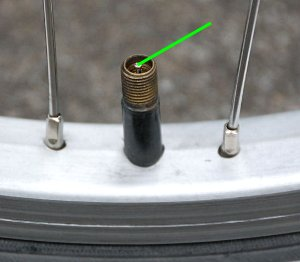

This chapter has been divided into 3 parts to spread the content and avoid having too much information at one page.
If you haven't yet read the first two parts, it is important to do so before continuing on this part.
Use the back and next buttons at the bottom of this page to navigate within the parts.
The Pedophile's Handbook
Handbook > Finding Children > Hunting Season Pt.3
Welcome to the third and last part of the Hunting Season!
Important
Hunting Season Objectives (Part 3)
Let's take a final look at our Hunting Season objectives:
Selecting OptionsFinding a Hunting LocationEscape PlanningSpotting for PreysStalking a Prey- Capturing a Prey
As we now can see, there's only one objective left, and that is actually taking down and capturing a prey of yours.
This will be the absolute peak of Hunting Season excitement, because this will be all about actually making contact with a real child and prey whom you might have been stalking from a distance for a pretty long time.
If you don't feel alive when doing this, then you never will!
The capture of a prey is a broad subject that can mean several different things, depending on what sort of kiddie hunter you are and what sort of final goal you have:
The lightest form of prey capture is to do the same thing as some sport fishermen do: carefully wiggle the hook out of the fish's mouth and let it back into the water again, so it can safely swim back to its normal life.
In other words: just make contact with a child, talk to it some, and then let it go. Optionally, do this repeatedly with the same prey to have a nice little friend to talk to now and then.
This is something that many kiddie hunters actually do, because it is actually exciting enough to just do this, especially after a long process of spotting and stalking.
Another way to capture a kiddie prey is to aim for a nonsexual friendship after you've made contact; which also is done by many kiddie hunters, especially the more conservative ones who are totally against sex practice with children, and some of those who hunt domestically in their own community.
This means becoming close friends by regularly hanging out and doing various legal stuff together, usually in secrecy.
The hardcore prey capture is to aim for sexual activities, regardless of having befriended the prey in advance or not.
This is what most kiddie hunters do, especially those who hunt remotely. This is also the form of prey capture that involves child prostitution. But it's basically all about treating children relatively nice and well at the end of the day.
The absolute hardest way of prey capture is assault-rape, which is almost always done remotely because of obvious security reasons. Though, it can be done by either befriending the child in advance or by just jumping all over it, out of the blue. Few pedophiles capture their preys like this, as it usually requires some brutality and is extremely insecure.
All these prey captures can be done either through a thorough spotting and stalking in advance, or with any random kid whom you may see wandering around within your hunting grounds; especially the ones being open and curious.
As you can see, there are lots of options available. And this is what makes the Hunting Season so exciting for all pedophiles out there; or any teleiophile for that matter who wants to do something as insanely exciting as having sex with sweet kids.
The Boundary
When the time comes to contact your prey for the first time, there's an important boundary that needs to be crossed.
This is the boundary that separates the stalking of a child, from a safe and comfortable distance, with contacting that child in person, being outdoors and in public.
There's a lot to be concerned about, so this first boundary can be a difficult one to cross for a first-timer.
The First Confrontation
The first concern that most newbie hunters meet, is the very first confrontation of an unknown child out in the field, which will require some bravery to accomplish.
The shyer and less confident the hunter, and the older and more confident the prey, the more challenging it becomes.
Just don't loose your spirit and give up that easily if you ever sense a resistance or avoidance with a prey of yours. Even the most professional hunters experience this from time to time, as some preys will be harder than others to contact.
The more time you spend in the field trying to accomplish a successful first-time confrontation, the better you'll become at doing that exactly. With time and practice, your confidence and skills will raise, while your shyness and fears will fall.
Rejection
Then there's the concern of getting rejected by the child, which always will be an unfortunate but realistic possibility for all kiddie hunters, regardless of experience and skills.
You may invest a lot of time and patience into a child, seemingly a perfect prey from a distance, but still get rejected in various ways, even hard and brutally.
And no one enjoys being rejected by another person, regardless of the circumstances. This is perfectly normal to feel and applies to most human beings.
It is therefore very important that you prepare yourself for a rejection, and know that this might happen.
And if it does happen, you will need to accept it and move on!
There are many more preys to be hunted down and captured; and each time you do this, the more experience and practice will be added to your resume.
Getting Caught
Another concern among newbie hunters is getting caught for doing something socially unacceptable, or even totally illegal.
Event though it's not illegal in most parts of the world to just contact and communicate with unknown children, it may still cause unfortunate confrontations with third-party adults.
Study your local laws; and if they don't prohibit you from talking to and having fun with children in the public domain, nothing you do that is legal can ever get you in trouble with the law enforcement nor the justice system in your area.
Exercise and exploit your freedom and legal rights to the fullest extent when generally interacting with kids in public, and use those rights confidently as argumentations if you ever get confronted by overzealous witnesses or parents.
Of course, these legal rights will be stretched when you hang out with children at secret places, and will obviously be broken as soon as your relationships become sexual, which leads us to the next paragraph:
Always note my former and future security advices and important tips, as they all contain the tools you need to stay safe and comfortable as a kiddie hunter.
... continued
This first boundary has to be crossed, if you ever want to contact a prey of yours for any sort of relationship.
The more patient and careful you are, as in the longer time you spend out in the field as a kiddie hunter while taking security seriously, the more likely you will meet one of those beautiful and special exceptions whom will make this first boundary very easy and convenient to cross.
There are several ways to go about this, with several unique tricks to lure the children; some having been used by kiddie hunters since the 1950's and the beginning of our modern society, along with the latest and greatest 21st century child psychology and hunting techniques; all of which you will thoroughly be taught in this guide.
Please note that if you're a genuine pedophile, contacting and communicating with children should be one of the easiest and most natural tasks in your life. If you haven't communicated with children that much, you will quickly notice how easy and natural that feels when you first start doing it.
Not only will you feel comfortable when communicating with children, but the children will also feel very comfortable towards you, when you show that genuine kindness and interest towards them, which only genuine pedophiles can.
This will definitely be an exciting boundary to cross. And I will help you cross it in the best way possible.
Stranger Awareness
The average child of today, especially in the developed world, can be hard to contact with success as a stranger.
This is because the average parent of today instructs all of its children, in various ways, to avoid all strangers.
There are however a couple of problems with this protection, which probably few guardians are ware of, which are important advantages for kiddie hunters to notice and exploit:
Child Curiosity
The first problem for these parents is that all children are curious by nature, while having independent minds.
Neither do they think exactly like adults does, as in really understanding and appreciating the full extent of the concept of stranger awareness, when being such curious.
I will later in this guide teach you several ways to modulate a child's behavior towards strangers, to exploit its curiosity.
Group Braveness
The second problem for these parents is that all children are rarely afraid of strangers when they're in groups, like two or more children together.
In groups, they can become pretty brave and mad, even do some really crazy stuff; all impulsive and just like that.
Contacting a group of children can be an easy way into their panties, whether you got a certain prey in mind in that group, or your are just looking for random preys outdoors.
Differences
The third problem for these parents is that all children are very different from each other.
Some children have unique properties that suppress most warnings about strangers; like being extremely open and outgoing, less intelligent, less careful, extremely curious, or having an above-normal sexual curiosity and activity; all of which are advantages that may surprise you and make things go much easier than anticipated.
Love for Animals
The fourth problem for these parents, and probably the most important one, is the average child's love for animals.
This love is commonly suppressed by parents who don't allow their children to own their own animals, making their children urge for animal bonding and care. But all children will feel a natural attraction to animals regardless, especially little girls.
Therefore, consider using a cute dog as your companion when making contact with children for the first time.
Dogs will make you look very harmless, while being very nice icebreakers when you approach and confront children as a stranger, especially the shy ones who are aware of strangers.
A cute dog can quickly make most children forget all about their parents warnings about strangers.
Good Chemistry
The fifth problem for these parents, is human chemistry.
We've already been into this highly underestimated but also highly important subject of chemistry. In other words, how well people initially go along, which also include adults and kids.
Chemistry can be like a lottery when hunting for children. However, when you do win that lottery, you will meet a child whom will really like you from the very first minute and on.
And when children begin interacting with strangers whom they like very much at once, everything their parents told them about strangers, will suddenly fly out the window.
Linear Mindsets
The sixth problem for these parents is the average child's linear and primitive mindset.
Yes, you may be a stranger when the child hasn't yet spoken to you. But as soon as you begin speaking together, and you manage to break that first barrier and grab that child's initial curiosity and trust, you will no longer be a stranger.
And if you're no longer a stranger, the child may of course interact with you safely; it thinks.
And this applies even to the older and more mature children.
Special Children
Finally, stranger awareness rarely apply to special children.
Their need for attention and love, and acceptance and friendships, will override any warning they've ever received from any guardian at any point earlier in their lives.
And of course, most of these children lack decent parenting anyway, making it less likely that they've even gotten any warnings of such in the first place.
... continued
If parents who read this think that they can protect their children from all these security holes, by modifying their stranger awareness practice, they will only succeed doing so by performing brain surgery on their children. Because, these security holes are based on how an average child's brain is actually wired physically. These are weaknesses that they can't do anything about, and weaknesses that we can exploit to seduce their children and become their first male lovers.
The bottom line is that when children meet strangers whom initially seem more interesting than threatening, with great friendliness and charisma, maybe with special gifts to offer, the kids may quickly forget all about any warnings they've received about strangers, thus make their own conclusions.
This can lead kids straight into your trust and hands, even though their guardians, whether being their parents or school teachers, have told them to avoid and reject all strangers.
The Final Decision
This part of the Hunting Season separates kiddie hunters into two major groups:
Group 1 Hunters
If you are one of those who don't feel comfortable nor ready to actually capture a prey at this point, then you belong to the first group of kiddie hunters.
Don't look at this group as any sort of defeat, as it really isn't!
Many pedophiles actually stay on the latter parts indefinitely, simply because it's so exciting and enticing to just prepare, research and hunt for children at various locations outdoors, without actually capturing any.
It's also legal and safe to do so if you're careful and discreet, thus it can be done while staying comfortable and happy.
By just getting out there and lurking around various children, you're already a pedophile winner. You're no longer among the pedophiles who hide in shame and allowing themselves to indefinitely stay suppressed and strangled by the society. You're already among the successful pedophiles who're actually claiming their human rights to experience closeness and sex with children, while you gradually are becoming a professional kiddie hunter.
What's really important for you guys to be aware of, is that this group is only a temporary harbor:
At any time in the future, even though how unlikely it may seem to some of you at present time, you may actually end up seducing an outdoors child sexually for the very first time.
It can happen suddenly and unexpectedly, like many group 1 hunters have experienced; suddenly meeting a very unique child sometime in the future, putting your warm adults hands down and into that child's warm panties, whom is shivering of excitement; suddenly feeling two small hands surrounding and squeezing on your erected genital, and gently fiddling with your testicles, while that child explores an adult penis for the very first time; somewhere quite and somewhere safe; safe enough to finally ejaculate while the child looks at you and your genitals with two big eyes and an open mouth.
Suddenly, you find yourself shocked in your car on your way home, having experienced sex with a real child for the very first time, and accidentally moved to the group 2 hunters, where you may want to stay for the rest of your life.
This can actually happen sooner than you think!
Just be patient while preparing and hunting, and just keep on loving what you're doing. And keep in mind that those who wait the longest, are those who get the best tasting preys and the most safe and rewarding kiddie sex in the end.
Important
You may want to just carefully try out the first legal portion of obtaining a prey, just to see how well this works out for you, before making any final decisions about where you want to stay.
Group 2 Hunters
If you're one of those who feel ready to capture a prey, or at least ready to make a careful attempt to do so, then you belong to the second group of kiddie hunters.
All I can say is that you're now about to experience what will most likely be the highest rush of adrenaline, excitement and sex that you've ever experienced in your whole life, which can only be experienced through pedophile kiddie hunting.
Are you ready to do this? Are you ready to exploit and harness one of the most powerful energies in the universe, which is the conscious experience of having sex with kids?
This handbook will thoroughly teach you how to successfully capture your preys; and eventually make love to them.
So, what are we waiting for?
Capturing a Prey
Now you're about to capture a prey, which means that you will need to establish a connection between you and your prey, by choosing a preferred capture method.
This is initially one of the most difficult tasks among all the tasks of your whole Hunting Season. It will require discretion, guts and special techniques to become successful.
To several pedophiles, especially the newbie kiddie hunters, this may seem like a very big and complex task to accomplish. But I did use the term "initially" for a reason: it doesn't have to be all that big and complex after all. You may be surprised!
I will now lead you through this difficult territory, by teaching you the basics of capture; and we will go through it together.
Important
Please note that you really don't have to have a certain prey in mind whom you have been stalking and surveying in advance. All the advices and instructions listed below can also be applied on random children outdoors.
Approaching Children
To create a connection between you and a child for the very first time, you will need to approach it. This approach can be done in two major ways, either passively or actively.
The right sort of approach for you will depend on your own preferences and intentions as a kiddie hunter, and the circumstances of your hunting.
You will much better know what the right type of approach is for you, after having read through this section.
Important
This section is crucial to read and learn, as it is the important basis for all the upcoming Capture Methods.
Passively
The safest and most comfortable way of contacting a child, but unfortunately also the least effective and successful, is the passive option.
This is a superb default option for all beginners and skeptics who want to stay as secure and innocent as possible, while experiencing a great rush of excitement and joy as hunters.
This option is all about placing yourself at the same location as the child, seemingly accidental, but thoroughly planned.
You will not approach nor speak to the child in an active way, just make sure that the child initially sees you and learns your existence in the universe to know.
Instead of contacting the child actively, you will do it passively, as in trying to make the child contact you instead; optionally by using some neat tricks to grab its attention and curiosity, which you will learn all about in the Capture Methods section.
Yes, this may be the least effective and successful option to contact children in general, but it sure is the best way to test how curious and interested all the children really are towards you as a stranger, which can become very interesting.
This is also by far the best option to use when searching for special children whom seek attention and look for friendships. This option will make it easy for you to quickly notice them, as they will have an unusual high interest and trust in strangers.
This option is however reserved for the patient pedophiles, with some decent time to spend on a regular basis, as it really requires a lot of time and sessions to succeed.
But when a child chooses to contact you by its own free will, you will suddenly strike gold. These children will be the best and safest ones to seduce and have sex with, regardless.
If not Noticed
You may experience that your prey doesn't notice you when using passive approaches.
This usually happens when your prey is at miscellaneous play sites and is occupied with a certain game or just general fun, especially when playing with several other children.
And you may have to keep a certain distance to that play site as well, to avoid public suspicions or frightening the kids, which makes you even less noticed.
It can also happen in big and busy city environments, with lots of other people and activities around the both of you.
The child's age will also affect this, as the older children care less about strangers than the much younger and thus more naturally curious sweeties.
Well, a child may actually notice you, but pretend to have not. This is usually related to fear or shyness towards strangers.
Solutions
The first solution to this problem is simply to just repeat your passive approach a few times to see if your prey finally notices you after some further attempts, or gains more trust towards you, as a stranger, by seeing you more than once.
A second solution is to meet your prey on alternative locations where you can be more easily noticed, like in less dense and active environments where you'll be more visible.
The more attempts you perform, and the more you make yourself visible, the more likely the child will finally notice you and contact you. And your own dedication and patience will have to decide when enough is enough.
If nothing seems to help, you will either have to perform an active approach on your selected prey instead, or find yourself another prey to once again try approaching passively.
If Contacted
As soon as you make yourself visible among children, whether just walking by them or trying to grab their attention somehow, they may contact you in various ways.
It is therefore wise to be prepared for this, so you will know exactly how to handle such situations when they happen.
Most children who choose to contact you, will just greet you with a 'hi' while passing by each other, which means that they are generally quite open towards strangers.
If you feel ready to interact with children who greet you, and you feel comfortable doing so in that particular environment, simply exploit this unique opportunity to engage a conversation with the child, and see how it goes from there. This will create an important basis for trust and friendship, which will become extremely advantageous for later.
If you don't feel ready to engage conversations with children, like if being totally new to this and suddenly feel unsure, or you feel less comfortable doing so in that particular environment, just greet the child back in a friendly way before gently leaving the area.
This would anyway be a great thing to happen, because it means that the child is obviously very open towards strangers; thus it will most likely greet you again the next time you meet, and be generally easy to contact in the future.
Some children however, may additionally or instead start asking you various questions, which means that you may be dealing with a special child.
These questions are usually very direct, but mostly harmless, and based on innocent and naive curiosity:
"What is your name?"
"What are you doing (here)?"
"Where do you live?"
If you don't want to or can't interact with that child at that particular time and place, just tell the child that you're about to meet someone, so you will need to hurry. But you would love to speak to the child again another time.
The child will then feel less rejected, and more likely look forward to your next meeting.
Of course, if you're performing an activity to attract a child's attention, you will have to be ready to communicate with children. And a great idea now, would be to start talking about the stuff that you're doing, optionally ask the child if it wants to help you or take part of your activity.
Think thoroughly about all this before you decide to passively meet your prey in person.
Also read through the upcoming conversation tips, as they contain lots of important info, especially for the newbies.
Actively
Those of you who want to cut to the chase and be as efficient as possible, are free to contact children actively.
This may also be a last resort for some of you if the former option didn't work out, leaving you with no other choices than to take things one step further, with a certain prey of yours, if you want to establish a connection between the two of you.
Or, it can be done on various random children outdoors, without any planning in advance, just to see how they react to it and if anyone becomes generally interested in you.
This option is therefore all about approaching children actively to try making contact, in an attempt to communicate with them and create initial trust and bonds; which hopefully will make you able to seduce them, either instantly or with time.
This can also be a nice way to find special children whom are initially too shy to contact you all by themselves. So, when you approach and contact them actively, they should appreciate your attention and interest in them, thus open themselves up and accept you into their hearts; and eventually panties.
While not being illegal in most parts of the world to approach and speak to unknown children, it will always be less secure doing so as a stranger; as it may attract negative attention from your surroundings, even from the child itself. This makes this option at least feel less secure to practice, and may thus become less comfortable, especially for the newbies.
But, it will always be quite exciting to contact unknown kids, just to see how they react towards you as an adult stranger. Several of you may actually get a turn-on by just doing this, thus finding this option pretty cool after all.
There's something really special about that first approach, speaking with a child whom you may already have fallen in love with from a distance; seeing straight into those big beautiful eyes, knowing that this is your prey, you're now in the process of capturing it, and it's right there in front of you.
This will be exciting for both newbies and professionals alike!
Default Approach
Engaging a conversation with an unknown child for the first time is the very first step of actively setting up a new communication link between the two of you.
Such a communication link will be an important part of the upcoming Capture Methods.
It is therefore great to prepare yourself in advance and learn how to engage a first-time conversation with both young children and adolescents, by using just one default method for each age group, which will be very easy to remember and perform, before getting down to the actual Capture Methods.
The first words are the hardest ones, usually because most hunters are concerned about the child's reaction. They can also become hard if you're shy by nature or a newbie hunter.
So, let's make this as easy and as efficient as possible:
Regular Children
The first sentence I prefer to use when approaching children below the age of 11 for the first time as a stranger:
"Hi there. My name is Joe. What is your name?"
Most children at this stage, the younger children especially, like such introductions of telling each others names.
This is a great way to appear as a kind and harmless adult, while exploiting their childish curiosity in an efficient way.
Adolescents
For adolescents at the age of 11 and older, I prefer phrasing it a little bit differently, but basically the same as the latter:
"Hi. I'm Joe. And you are?"
This is a little more mature edition of the other introduction, thus much better fitted for the more mature kids.
This will also sound very kind and harmless, in the same time as exploiting their curiosity as well.
... continued
Security
Never use your real name when introducing yourself to children as a kiddie hunter.
What first approach to choose can be difficult to decide when you're dealing with like 10 year olds, whom aren't young children anymore, but neither yet adolescents. This leaves a lot of pedophiles unsure.
Whenever you're unsure about this, go with the latter and most mature introduction.
Most of them will become pretty curious about who you are and why you're making contact, which for most children will be a positive experience.
If you're a male who contacts an adolescent girl, or a female who contacts an adolescent boy, the kids may even become romantically flattered.
It always helps acting a little bit humble and clumsy while doing this, while expressing a genuinely happy face, as this will make them trust you more easily; contrary to being very confident and assertive, which will make most insecure.
This first approach and contact will tell you a lot about your selected prey and what your future will be like.
In other words, this is actually a test. This is like trying a key in an unknown door; it will either open, or it won't:
Their Reaction
All children react differently to strangers; some are very open and curious, while others can be shy and avoiding.
This will first of all depend on what sort of view a child has on strangers, and its level of stranger awareness and shyness.
Second, it will depend on its curiosity and need for attention, acceptance and friendships.
Not to mention, its sexual curiosity and needs, aka libido, which subconsciously affect most children at various degrees when strangers contact them in a kind and loving way.
Third, the child's age will also have an impact on the success of such approaches. The younger children will be much easier to contact and handle, while the older ones will be more cautious and challenging.
Initial Reaction Scenarios
When you're approaching children in an active way and contacting them as a surprise, they will not be prepared for it, which can have various different consequences.
There are however 3 major and different scenarios that most kiddie hunters can experience when actively approaching and contacting children as strangers.
I will now go through all of them, including recommended actions and speech:
Scenario 1
The worst scenario that can happen is that the child either seems totally uninterested or just walks away from you, without a single response.
This is most likely due to their guardians having thought them to fully avoid all strangers. It can also be a child who has been abused badly by other adults, thus avoiding all adults whom it doesn't know.
Or, it may just be a very pompous adolescent girl!
If this happens, my recommendation is to leave that prey be and find yourself another one; ideally in a different area, but not necessarily at a whole different hunting location.
If the child seems frightened however, especially if it starts to run away, I would have left that hunting location for good.
This scenario is luckily the rarest of them all. But you should still be prepared for it, so you'll know how to handle it.
Scenario 2
Most children who're being approached by strangers won't be totally silent nor flee away.
But some have still been taught not to talk to strangers, thus a usual response from such a child would be:
"I'm not allowed to talk to strangers."
The most appropriate response to this would be:
"Oh, I understand. If you can't talk to me, you don't have to. But I am a very kind person, so we can talk together if you want to. It can be our secret."
Now, you will first of all show the child that you accept and tolerate the child's rule towards strangers. Then you give the child a choice, thus giving it control over the situation, making it feel comfortable and safe towards you and this situation. Finally, you assure the child that you're a kind person, while stimulating the child's curiosity and excitement by suggesting secrecy and an easy way around this otherwise stupid rule.
And this will be the moment of truth!
If you should sense any curiosity or interest behind that outer layer of stranger avoidance, or if you just want to be a little bit bold and have some fun, you may right afterwards try starting a conversation by giving the child some nice compliments and asking a few nice questions. And then see what happens.
If the child is genuinely interested in communicating with you, that should become pretty apparent. It may start out slowly, but it should finally begin talking some.
If it seems awfully quiet and less comfortable with your presence, or it urges to continue walking if you met on the road in a hurry, you can finally say in a polite way:
"Well, it was nice meeting you! have a nice day!"
This will really assure the child that you really are a nice guy who's very polite and not pushy at all. This may make the child actually re-decide and start talking to you after all.
If the child really doesn't want to talk to you, you made the right decision anyway to politely leave.
And then it is time to find yourself another prey, ideally in a different area, but not necessarily at a whole different location; like described in Scenario 1.
If you did manage to make the child talk, or it's still around and seems a little bit curious, victory should be within reach.
Don't worry, we will get to the communication tips soon!
Scenario 3
This is the scenario that you really want to happen. It will open so many possibilities in front of you and make everything so much easier for you as a pedophile kiddie hunter.
If you have done a thorough spotting and stalking of a prey, especially having found a special child, or just dealing with an unusually outwards kid, this scenario will much likely happen.
The ideal scenario would therefore be a happy and dedicated response to your introduction, hopefully with a smile:
"Hi! My name is Melissa!"
Well, the child doesn't have to be overenthusiastic of course, but just seem like a generally open and friendly kid who talks back to you with a basic level of curiosity and interest.
Or, it might just start to babble away and/or ask questions!
As already stated, there are some nice communication tips further down that we will get to in a few minutes.
The Danger of Rejections
In Scenario 1 and 2, I advised you to ideally change your hunting area, or even the whole hunting location, after a failed attempt to approach and contact a child as a stranger.
Several of you may look at this as highly unfortunate, considering all the time and dedication you may have put into a certain hunting location, which is much understandable.
But there's an important problem related to the failure of approaching and contacting children, when a child either avoids you or becomes scared during the attempt.
This problem has to be addressed so you will become fully aware of its reality and consequences.
The final decision will then, of course, be all up to you.
The problem is that these children may tell one of their guardians that a stranger has just tried to approach them; which can have various consequences, all the way from nothing at all to a guardian actually traveling to the area in question to see what's happening and who's there.
Some guardians may even call the local police and inform them about what just happened. Though, this is quite rare, and usually reserved for very small towns and communities. This won't cause any big alarms to go off anyway; but a lazy officer in a small town, with too much spare time on his hands, may turn up sometime later to just check the area out.
Well, there are no real reasons for you to panic, really:
First of all, it's not illegal to greet unknown kids in 99% of the world. However, unfortunate and embarrassing confrontations with either civilians or the police may happen, even though they can't do anything about this other than asking you lots of stupid question that you don't need to answer.
Security
If you get confronted by the police with questions after this, they may additionally ask for your ID, which they have the right to see by law. Unless you got a fake ID, this can mark your ID unofficially as a potential predator. But that information will usually be limited to the local police of that local area only.
Second, as long as you only greeted the child and asked for its name, things won't be happening all that fast anyway. There will thus be no sirens, dog barking and helicopters behind you, while running desperately through the woods.
Most likely, nothing will happen at all.
But there will always be a slight possibility that embarrassing and unfortunate situations occur after a rejection, which is why I recommend changing your hunting area or whole location when being rejected, so you won't have to deal with this shit.
And the more severe the rejection, the further away I'd set my new hunting grounds.
If you insist on using the same hunting grounds after a failed attempt to approach and contact a child, you should at least find a decent hideout in the area where you got rejected, ideally as soon as possible, and hide there to see if anyone comes around to check the area out later, or the next day when the child is scheduled to arrive. If all looks good, it could be safe to continue hunting in that same area. But you should probably choose another path or play site. And only do this kind of testing if you know your environment well and already have some experience as a kiddie hunter.
It will always be risky approaching and contacting children as a stranger, but in the same time totally legal in most parts of the world if you're friendly and nonthreatening.
Increasing the Success
Before you perform a real approach and contact a child, you may want to use a couple of sessions or days in advance to just greet the child while 'accidentally' passing by each other.
Just say "Hi, there!" or something similar when passing by.
This will create a tiny social bond that may help you when the actual and real approach finally happens.
A few such greetings in advance is highly recommended if you're a skeptic or newbie, or anyone who just wants better odds of success..
This technique may even trigger the child to start talking to you anyway, making the first contact even easier.
Communication Tips
When you approach and contact a child with success, there are some important tips that you should learn and use to make sure the success continues.
I recommend that you read through the instructions for both regular children and adolescents, regardless of your age preference. You may want to combine them into a custom method that works better on your selected prey, especially if your prey is close to 10 years of age and thus within the difficult gray zone between a child and an adolescent.
Regular Children
We kindly asked for the child's name as a recommended part of contacting regular children for the first time.
If the child tells you its name, whether being a little bit shy or quite open, it will be a very good sign. But it will also give you an unique opportunity to compliment its name, thus making you immediately become a very nice person and stranger.
Compliments are extremely important when building trustful relationships with regular children, thus here are some nice compliments to use regarding its name:
"Melissa? That is a beautiful name! But of course, a beautiful girl needs a beautiful name!"
A young boy will obviously need a masculine compliment, which doesn't have to be as complex as when dealing with the complex minds and emotions of females:
"Hi there, Jake! That's a really cool name, by the way!"
Now, we will use a neat trick that will explain why you made contact in the first place, while still complimenting the child and acting safe and friendly, which works on both genders:
"You look like such a nice and cool kid, so I just wanted to say hello to you, which I hope is okay with you."
At this point you should get a pretty good idea about how the child looks at your approach and contact:
If it acts less interested and has an unhappy face, this might not be the ideal prey for you. If it still seems pretty shy, but does smile some, there is hope. Best of all, the kid will seem interested and happy, ideally smile a lot and giggle some from your compliments, which would be a really good sign.
We will now stop using compliments for a while, as even very young children can detect phoniness. We have already made a great first impression, so we will from now on try engaging a regular conversation with the child instead.
If you are unsure about having conversations with children, don't worry. All you need to do is to ask lots of questions about various stuff they commonly enjoy talking about. The conversation will sooner or later take on a life of its own.
And the more you talk, the less shy and insecure the both of you will become, and the easier this all becomes. You will see a significant difference after only a couple of minutes.
Here's my top-25 list of questions that I've crafted for this task particularly, which you may ask in the order listed below, and is very suitable for most children:
- May I ask how old you are?
- What grade are you in at school?
- Do you like school?
- Are there any stupid teachers at your school?
- Are there lots of homework nowadays?
- What do you do when you get home from school?
- Do you like playing outside a lot? At any special spots?
- Do you have a best friend?
- Do you have some cool dolls/toys at home?
- What's your favorite doll's name?
- Do you have a game console or a computer?
- What's your favorite console/computer game?
- Do you have any pets?
- What are the names of your pets?
- What is your favorite animal?
- How many brothers and sisters do you have?
- Are your brothers and sisters kind or mean towards you?
- How do you like being a big/little sister/brother?
- What does your mom/dad do for a job?
- What is your favorite kind of candy?
- Do you have a favorite TV show and movie?
- What is your favorite color?
- What sort of food do you like the most and the least?
- Do you play sports? On which team?
- Do you play any musical instruments?
These questions aren't only meant as a basis for conversations and bonding, but also meant to give you crucial information about your prey, like outdoors play sites, favorite stuff that you can exploit as treats, gifts or prostitution payments, what their parents do for a living, any big siblings, while generally learning your prey to know.
If this is a special child, this conversation part will turn out especially easy, because the child will more likely do most of the talking and ask you a lot of questions as well. And if the child is on its way home from school, it may even open it's backpack and show you various stuff inside it; it may even suggest showing you its secret play site at once; all of which have happened several times with kiddie hunters.
I usually recommend avoiding the question about where the child lives; as the younger children are bad at explaining such, and the older children may look at it as creepy. Unless, you're very eager to learn its address, like having not yet been able to figure that out, thus taking a chance on this question.
Just talk to the child while showing a great deal of interest in the child and its life, as most kids do really appreciate this.
And of course, try to keep an eye on your environment as well as the kid. It's far too easy becoming totally occupied by the little troll if this turns out as a huge success, making it easy to forget that someone might see you or approach you.
Adolescents
Just like with the younger children, we introduced ourselves and asked for the adolescent's name in a friendly way, which always is a great start for a new potential friendship.
However, we won't start complimenting their names in the same way, because most will interpret that as quite phony, and thus become suspicious. Well, it might work with some, especially the girls, but we won't take that risk at this point. Though, you may do it at a later point when you've learned each other a little bit better to know.
Adolescents are developing structured and logical minds, thus they expect that there's a specific reason to why you make contact as a stranger, while looking for intentions.
Yes, their brains are much bigger and smarter, so we will handle them more like adults instead. But even though they seem like small adults, and to some extent act in that way, they're still children; they're still underdeveloped, childish, naive and curious; and that is just wonderful.
More adult like conversations and social expectations will of course make it more challenging for the kiddie hunter to succeed, as in winning their hearts; but this way of communicating also opens up a lot of exciting opportunities that we'll look further into further down.
So, what would be a typical response to our introduction?
Well, since the adolescents are way more advanced children, they are also much harder to predict, in the same time as being a little bit mentally unstable because of their puberty.
So, the responses can be various, but usually among these:
"Why do you ask?"
"Who cares!/?"
"Uhm, Melissa..."
"Hi! I'm Melissa!"
Actually, some of their responses may seem brutal and avoiding at first. Some may even seem rude. But it's usually not meant to be either, as this is usually just their way of being cool or a little bit defensive towards strangers.
Don't let a harsh answer scare you away at once; just be polite and be yourself, as that usually pays off in the end. We're talking about fairly complex and confused children here, so give them a fair chance before you give up.
Well, a nice reply is of course the most preferable, especially with a nice smile added, both of which are very positive signs.
As soon as you get a successful response, at least having their attention, it's time to initiate the main speech:
"I've seen you a few times around these parts, and you seem like such a nice and cool person, so I just wanted to say hello. And I hope that's okay with you."
If you have also read the advices for regular children, you will most likely recognize this speech. On adolescents however, it will have a more advanced and complex effect:
It starts out by making the adolescent feel quite attractive and important, since people are obviously noticing her or him; and so attractive that she or he is being greeted, almost like a movie star. This will have a huge impact on adolescent girls, as they're famous for being insecure about how they appear towards others; and especially effective on not-so-pretty adolescent girls. And, we end the talk by showing sensitivity and respect, which will give the adolescent a sense of security and control, while you make a great first impression of yourself as a nice and decent person and stranger.
And just as with regular children, you will quickly learn where you stand after this speech, which will save you a lot of potential time and headache:
If it acts less interested and has an unhappy face, this might not be the ideal prey for you. If it seems pretty shy, but does smile some, there is hope. Best of all, the kid will seem interested and happy, ideally smile or giggle some from your compliments, which would be a really good sign.
If you're an adult male who approaches an adolescent girl, you may actually succeed flattering her, and flattering her to the extent of her immediately falling in love with you, thanks to their unstable puberty. The common signs of flatter and love is that she smiles a lot while looking at you, also blush some and seems shy, but still seems quite interested.
Flatter and love among adolescents can also happen if you're an adult female who approaches an adolescent boy, but adolescent boys are much better at hiding such feelings behind their cool and rough appearances. But one common sign is a seemingly great interest towards you, and even some sleazy suggestions, which I guess would be okay for any female hebephile hunter (if those even exist!).
Same gender approaches will obviously not trigger any immediate romance, but may still trigger some flatter; unless of course, you have found yourself a nice little gay or lesbian, or a kid whom is open towards exploring such relationships.
If this isn't your home providence, a commonly used conversation starter is to tell the adolescent that you're visiting the area from time to time, and then tell her or him how lucky she or he is to live in such a great place.
This is a great way to proceed from the latter compliment, as we are now shifting our focus towards something other than the adolescent herself or himself, so we don't seem too interested in the adolescent, which may seem some creepy.
However, you will usually get either of these two responses:
The adolescent starts to laugh, because you may be dealing with a young girl or boy whom hates her or his local town or community, which is quite common for rural areas. But that would be a great thing to happen actually; because if you make the adolescent laugh, or just get a little ironic smile from her or him, you've already come far. Just smile yourself, as if you told her or him a funny joke.
Or, the adolescent may totally agree with you, as she or he actually likes it there and thrives within its local area, which will make your statement a nice compliment instead.
So, this is usually a win-win statement.
Regardless of the response, exploit this subject to keep the conversation going: if the adolescent seems to hate the place, ask what she or he hates about it. If she or he enjoys living there, ask what she or he loves about the place. Ask if there's something exciting going on there, any cool places to visit, and so forth, as this can lead to many interesting subjects and opportunities.
The adolescent may also ask why you're visiting the area. Whether it asks or not, you may tell her or him that you're planning to move down there soon, so you are just checking the place out while looking out for houses for sale or apartments for rent; all of which may also be used as a conversation subject, like asking her or him if she or he knows any homes for sale or rent in the area, and where it's nice to stay. This will make you seem even more safe and trusty.
A very nice question to ask an adolescent, which may open several different conversation subjects to talk about:
"So, what do you like doing when school is over?"
I know, it is kind of a personal and direct question to ask this soon; and it may even seem like you're suggesting to hook up after school hours. But with adolescents, I actually prefer being quite personal and direct, as this is can be a nice test: if they really find you exciting and pleasing, they will respond quite positively to such a question.
Additionally, you will appear quite self-confident and honest, which has the general effect of reassuring most people who don't know you; contrary to talking about the weather while seeming quite anxious, which will have the opposite effect.
Of course, if you don't feel comfortable asking a question like this, at this early stage, you are free to skip it and instead ask other and less critical questions to engage conversations.
With regular children, I made a top-25 list of questions designed to start various conversations while learning the children better to know.
This may be done with adolescents as well, but I generally advice you not to ask too many questions during this first conversation, as it will just seem odd. You may store lots of questions in the back of your head, but save some for later.
And, you should only go about these questions if all the latter advices have worked well up to this point, and if the adolescent still seems positive to your approach and engagement in her or him.
Here's my top-25 list of quite good conversation starters, being especially crafted for adolescents:
- What grade are you in at school?
- What is school like?
- Are there lots of homework nowadays?
- Do you have any siblings? How are they like?
- How do you like being a big/little sister/brother?
- Do you party a lot in the weekends?
- Do you have strict parents?
- What do your parents do for a living?
- Do you have a game console or a computer?
- What's your favorite console/computer game?
- Do you have any pets?
- What is your favorite animal?
- What type of music do you listen to?
- Do you have a favorite TV show and movie?
- What's the worst movie you've ever seen?
- What sort of food do you like the most and the least?
- What is your favorite season?
- Do you play sports? On which team?
- Do you play any musical instruments?
- What countries have you traveled to?
- If you could go anywhere, where would you travel?
- What type of phone do you have?
- If you could have any super power, what would it be?
- What's your perfect day like?
- What is the most valuable thing in your life?
And just as with regular children, don't yet ask where the adolescent lives, as that will most likely seem pretty creepy.
You should also avoid intimate questions at this point. Though, I added three of such at the bottom of my top-25 list, but they should be pretty harmless at this stage.
Just talk to the adolescent while showing a great deal of interest in her or him, and its life, as most most adolescents do really appreciate this.
Contrary to regular children, you don't need to pay that much of attention to your environment when talking to adolescents as a stranger, as most witnesses feel a less need to protect these much older and maturer children.
An optional question you may ask at the very end of your conversation session, which on one hand may give you a pretty good idea about how the future will be like for the two of you, but on another hand become a little bit too pushy and intimate for some adolescents:
"Are you interested in new friends in your life?"
Some adolescents will give you an honest answer, whether it's positive or negative; while others will give you a positive answer regardless, just to be kind and not hurt your feelings.
An experienced hunter, especially someone who knows basic psychology, will be much better able to distinguish between an honest and dishonest answer in this regard.
This is why it is an optional question, and a decision you will have to make on your own.
General Notes
Adolescents can be challenging to contact and keep active conversations with, a challenge that increases with their age. This is because they are mature enough to ask themselves: why does this stranger contact me? Why should I talk to him? In the same time, they can easily see through you and your true intentions if you act artificially or get too intimate too early.
Younger children can willingly talk about nonsense for hours with a stranger, without thinking anything about why the stranger contacted them in the first place. They are just enjoying life itself and all the excitement within it, which makes the younger ones far easier to contact and keep conversations with, especially young elementary schoolers.
Adolescents also lack the emotional transparency of the younger, meaning that it's far more difficult to tell what they really think about you, by just observing their expressions and behavior. They conceal their emotions much better.
With younger children, you can easily see what they feel towards you through facial expressions and body language.
Young children may be taught to avoid strangers, but they can easily be tricked out of it if an interesting stranger appears and does the right things and says the right words. Adolescents can't that easily be manipulated, so they may think for themselves that "Wow, this person is a creep!", regardless of how you appear and what you choose to say.
While being generally easier for kiddie hunters to approach and contact the younger children, it is on another hand much safer to approach adolescents as a stranger:
First of all, the general public tends to look at adolescents as quite independent beings, thus you won't attract that much attention from the public when approaching, contacting and interacting with them.
Second, adolescents will also feel way more mature, confident and in control of their own beings, contrary to the younger. They are starting to separate themselves from their guardians, as a part of puberty and becoming more independent, so they tend to solve their own issues and problems by themselves without involving their parents.
So, if an approach, or a sexual activity, should end badly with an adolescent, it will usually not run home and blabber about it to mommy and daddy, but more likely just tell about it to its closest friends, or keep it to itself (for an eternity).
Third, this independence and continuous separation from their guardians will additionally make it very safe to practice longterm (sexual) relationships with them, thus make plans to hook up another time.
If you mange to achieve a successful approach with a child, the chemistry between the two of you will more or less decide how much the child will like you as a person. With a good match of chemistry, all kids at all ages will like you a lot, almost at once, and not stop liking you anytime soon if you treat them nicely.
If they additionally want or need new friends, or think adults are special and exciting to know and hang out with, this will go even smoother, and most likely end with complete success.
If you have spotted and surveyed a troubled child whom is lonely and friendless, as in a special child, the odds of success will definitely be on your side.
... continued
I always recommend starting with the passive option, to see how such an approach goes, even though if you feel that you are experienced in the field. This is because the passive approach has some neat features that can make your kiddie hunting very secure and successful in the end.
Because, if the passive option works, it usually means that you have found yourself a very friend and adult seeking prey, whom should be very easy and safe to befriend and seduce.
Of course, if the passive option doesn't work out, the active one will be a sensible next step; or you may just start with the active option if this is what you prefer the most, as it really is exiting and hot to approach and contact unknown children outdoors as a stranger.
If you are very unsure about capturing preys at this time, but still curious enough to carefully try it out, the passive option is a must; which will become extremely exciting if you're new to kiddie hunting.
Also note that a prey doesn't have to be all alone when you approach it for the first time. It is actually quite common that children travel around in groups, as in friends.
As I've already taught you, children in groups are usually much braver and less afraid of strangers than children who are all alone; which sometimes can actually make it easier to approach a certain prey for the first time while it's among its friends, just to have a nice little talk with all of them. When you meet your prey all alone during another session, sometime later, she or he will recognize you as that friendly stranger, thus be less concerned about talking to you alone.
However, you will loose some security by approaching your prey while it's among friends; because the more children you approach in the same time, the greater the chances are that one of them tells about it when it gets home.
I therefore recommend approaching children while they are alone, as that will give you the best control and security.
Always remember that the children who travel mostly alone, are usually the children who'll be the easiest preys to obtain; because these are usually the lonely ones, and those children can be special.
For all the concerned newbies out there, all I can say is that the more you do this, regardless of chosen method and its outcome, the easier and more successful it will become.
It will be exciting and enjoyable being out there in the field, among children, while trying to capture these playful, screaming and active little preys.
Capture Methods
Now, as you know all the basics about how to approach and contact children outdoors as a kiddie hunter, it is time to learn the basics about the various capture methods.
There are three major methods for capturing children preys, which is either: crossing paths, becoming a savior, or turning children into prostitutes.
My upcoming methods and advices have been made general to fit most kiddie hunters and their individual environments, based on both theoretical science and real-life experience from miscellaneous hunters out in the field. Therefore, they may not fit your situation exactly, but should nevertheless be pretty adjustable and adaptable.
Crossing Paths
My primary recommendation and most used method to capture a prey, while being the most ideal option in general, is to cross paths with your prey at special locations.
Such special locations are either certain parts of their regular travel routes, or places where they regularly hang out to play.
The main reason for making this my primary recommendation, is first of all because of your security as a kiddie hunter. You can now meet your preys within much controlled and innocent circumstances. Controlled, as in choosing a discreet spot to meet while the child is ideally alone. Innocent, as in making the meeting seem accidental rather than planned. And all this will increase the success of contacting children as a stranger while making it hard for any third-party witness or law enforcement agent to really prove your true intentions.
Second, it is the most predictable option. Children do have several static activities during a day, which is either fully predictable down to a few minutes, or pretty predictable down to a few hours. You will then know when and where your prey can be intercepted within ideal circumstances.
Third, you can use both passive and active approaches when making contact, giving you lots of interesting opportunities while staying very safe and comfortable as a kiddie hunter.
Regular Routes
Most kids are active beings with a lot going on in their lives. This makes them gradually more commuting as they grow up and become more independent, which usually starts already when they enter elementary school.
These children use regular travel routes to commute around, so we'll use a special part of such a route to intercept them.
This special part of the route should ideally be a discreet location with little human activity in general, where the child is passing by at predictable times of the day.
The image above shows a sample of an ideal part of a path where such an interception could happen; where you can meet your prey for the first time in a discreet manner.
Now you see one of the advantages of hunting for children in less populated towns and communities in the countryside. These areas can offer some really nice and ideal interceptions, as they offer lots of paths as the one above.
But, it doesn't have to be all that difficult finding such a meeting point in a big city either, as many big cities have several nice and pretty discreet locations, as shown below:
Of course, a big city has lots of activities going on with lots of people all around. But it's also way more tolerant in general when it comes to contacting children in public, contrary to the smaller countryside towns and communities.
Play Sites
Most children have regular play sites that they visit to play, either all alone or with friends.
Such play sites can be many and pretty different from each other. It may be a special place in the forest where they enjoy hiding out and building huts, an abandoned building where they enjoy exploring and scaring each other, or just a regular community playground or park with just regular child play.
Secret hideouts are very popular among children of all ages. They usually find such hideouts as soon as they become independent enough to be allowed to explore their local areas on their own, making it possible to find even pretty young preys at such locations.
Such hideouts are extremely ideal for kiddie hunters to intercept their preys at, whether being young or old children, simply because they're usually very hidden and discreet in the first place. Such places can offer some unique possibilities.
Regular playgrounds and parks are commonly found everywhere, whether being in small towns or large cities:
These are generally less ideal locations for kiddie hunters to intercept their preys at; because they're usually very public, making it hard to interact with children without being seen.
Luckily, there are some pedo friendly playgrounds out there; like those located at more private locations, with less potential witnesses around; and those that are so large and active that it actually becomes possible to blend in and interact with the children without attracting too much public attention.
So, regular playgrounds are still fully functional as interception points, as long as you are very selective, patient and careful.
... continued
As a part of your former stalking and surveillance, you should ideally have found such a location where your prey can be intercepted as discreetly as possible, whether being along its regular travel route or at a play site.
As you probably have noticed during stalking and surveillance of preys, it can be hard to find an ideal and predictable interception point. This is why kiddie hunting requires an astronomical patience, and why only the most patient hunters are those who really succeed in the end.
It doesn't have to be 100% ideal though, but it should be ideal enough so you can feel at least some safe and comfortable when performing this otherwise legal task of meeting, greeting and communicating with a child and prey of yours.
Please note that this is obviously only an interception point, not the place where you'll seduce your prey. The interception point will only be used to carefully check your prey out and hopefully build an initial trust to lure your prey to a different location sometime later. Unless of course, you approach your prey at its secret hideout to begin with, where you can safely and conveniently seduce it whenever you want to.
Step 1 (passive)
The best thing to do first, if your prey hasn't seen you before, is to just make yourself seen for the first time as a nonthreatening stranger; especially if you're a total newbie.
And this is the very first and very easy step for those of you who want to use the passive option to contact your prey through the crossing of paths.
All you have to do is to just walk innocently by the child, whether it comes towards you on a path, or plays at a site, without talking to it nor interacting with it in any way.
This will just be a neutral and nonthreatening first-impression.
This first interception should ideally happen at your already chosen interception point, just in case the child is very open, curious or lonely, and feels like contacting you somehow.
Make sure you don't make eye contact with your prey yet, especially not staring while passing by. Instead use your side view to see if you're being noticed by your prey or not.
And that's basically it!
You have now broken that very first barrier, which is actually meeting the child for the first time in person. This will be very exciting, especially for the newbies, while giving you a certain taste of what's coming your way if you proceed with this.
You may repeat this step as many times as you want too, especially if your prey didn't notice you the first time, or if you're a newbie or skeptical who just wants to try things out and have some fun in the field as a kiddie hunter.
Step 2 (passive)
This is the second and last part of the passive option and attempt to be contacted by your prey.
We will now move a notch up, and not only try to be seen by the child, but also try to grab its attention for real.
This step should ideally happen after having successfully completed the first, without delaying it too long, as it will be an advantage being a fresh memory in the child's mind.
Of course, you may start at this step if you like to. But it may be an advantage to have passed by each other the other day, or even a few times, as that may make the child feel a little bit more secure and curious towards you as a stranger.
We will now make sure that you really are seen this time, as in really grabbing the child's attention. We will make sure that the child really notices you this time, and looks at you as an enticing and exciting stranger to approach and contact.
We will thus do something special within the proximity of your chosen interception point, to attract your prey's attention and curiosity, and then see what happens.
Hopefully, this will be the time when your prey contacts you, and turns your passive option into a great success!
Important
Make sure to be at the right spot along the child's route at least 10 minutes before it's scheduled to pass by.
For play sites, it doesn't matter if you're there before or after the child arrives. However, it will always be ideal to be there first, but that can be hard to predict and time well.
Also make sure that you stick to the approximately same spot while performing your activities, so it gets easy and convenient for the child to make contact.
Never look nor stare at the child, just concentrate on your activities and pretend that you're alone.
For play sites, it doesn't matter if you're there before or after the child arrives. However, it will always be ideal to be there first, but that can be hard to predict and time well.
Also make sure that you stick to the approximately same spot while performing your activities, so it gets easy and convenient for the child to make contact.
Never look nor stare at the child, just concentrate on your activities and pretend that you're alone.
Playing With the Dog
This activity is all about trying to grab the child's attention and curiosity by playing with a dog at the ideal interception point, while being as stationary as possible during the whole activity.
Notice
As you may already have read in this guide, a dog is the most important tool a kiddie hunter can use in general.
A dog is an efficient tool to grab a child's attention and curiosity, and generally exploit the love and interest most children have towards dogs, and animals in general.
A dog will make it easier for shy children to contact strangers, along with all other children who otherwise won't contact strangers by their own will, of various reasons.
It will also make your first conversations much easier, as dogs can be true ice breakers and conversation targets.
In addition to being a powerful kiddie magnet, a dog will also make your presence and activities around children, as a stranger, way more secure and comfortable. Other third-party witnesses will generally pay far less attention to you, while the children themselves, especially the older ones, will become generally far less suspicious towards you as a stranger.
A friendly dog may actually do all the job for you, by being the one who runs towards and makes contact with children, instead of yourself. And all you'll have to do from there is just to follow the dog and see what happens.
A dog is therefore my number one recommendation to attract and lure children as a stranger, regardless of location.
Well, a few children are actually afraid of dogs. So if a child reacts negatively to your dog, just restrain the dog and optionally apologize and tell it that you won't have the dog at that location ever again. This will even give you a great excuse to approach the same child the next day, without your dog, and ask for an apology, which can lead to all kinds of possibilities.
BTW, never attempt to scare children on purpose with a dog, so you can apologize for it later!
A dog is an efficient tool to grab a child's attention and curiosity, and generally exploit the love and interest most children have towards dogs, and animals in general.
A dog will make it easier for shy children to contact strangers, along with all other children who otherwise won't contact strangers by their own will, of various reasons.
It will also make your first conversations much easier, as dogs can be true ice breakers and conversation targets.
In addition to being a powerful kiddie magnet, a dog will also make your presence and activities around children, as a stranger, way more secure and comfortable. Other third-party witnesses will generally pay far less attention to you, while the children themselves, especially the older ones, will become generally far less suspicious towards you as a stranger.
A friendly dog may actually do all the job for you, by being the one who runs towards and makes contact with children, instead of yourself. And all you'll have to do from there is just to follow the dog and see what happens.
A dog is therefore my number one recommendation to attract and lure children as a stranger, regardless of location.
Well, a few children are actually afraid of dogs. So if a child reacts negatively to your dog, just restrain the dog and optionally apologize and tell it that you won't have the dog at that location ever again. This will even give you a great excuse to approach the same child the next day, without your dog, and ask for an apology, which can lead to all kinds of possibilities.
BTW, never attempt to scare children on purpose with a dog, so you can apologize for it later!
If the dog is well trained and obedient, you can let it loose and play with it, like throwing and playing with sticks.
If you're not comfortable with letting the dog loose, you can optionally have a long leash, and just generally play around.
Just have fun with your dog at the ideal interception point when the child either comes along or plays around.
Obviously, a human friendly and not so big dog is required!
This activity will attract children of all ages and both genders, making dogs quite universal tools for attracting children.
The Lost Dog
If you don't own a dog, nor have the option to borrow one, why not create one out of thin air?
This activity is thus all about pretending to have lost your dog at the interception point, and then try grabbing the child's curiosity through the activities of searching and looking for it.
This activity won't be as attractive nor efficient as playing with a real dog, as it may become some harder to grab the child's attention by just pretending to search, but still quite effective.
However, if you do manage to grab their attention enough to get contacted, some really interesting advantages will suddenly become available:
First of all, and just like the former activity when playing with a real dog, it has a high level of safety and comfort when being around children and potential third-party witnesses as a stranger. Your presence will be very plausible and easy to explain away if confronted by anyone.
Thus, it will become very safe and convenient having a child, or several children for that matter, helping you out with finding your lost dog, even when being in a public area.
And that leads us to the second advantage, which is being able to carefully steer a child in whatever direction you want to while searching; thus be able to slowly and gently move away from any pubic path or playground, and towards a more private area where you can share some quality time together without being easily seen by others.
The latter scenario will become especially advantageous for those who aim for instant sex with their preys.
For this option, a disassembled dog collar with an attached leash is needed. These are easy and cheap to acquire. Ideally with a name tag with the name of your phantom dog.
Make up a name and breed for the phantom dog in advance, along with a vague description of its appearance and size.
Even though it's not strictly required, a fake picture of the dog in your wallet will just add to your safety and success. Just search for dog pictures on the Internet, and print one out that seems to fit your country and region.
It's also wise to make up a story in advance about what happened and why your dog ran away; like the dog collar suddenly came apart and your dog fled.
Then, it will be all about having the equipment in your hands while searching in an obvious way at the interception point, optionally while shouting for the dog at a medium volume.
Most children will easily recognize a dog collar and leash, which will make them very curious and in want of helping out. And this should attract children of all ages and both genders.
Hopefully, your prey will finally contact you and ask if you're looking for a dog. It may ask a few additional questions about your dog and what happened, so be prepared as written.
And this would be a great opportunity to start bonding with your prey and start creating a relationship, while searching for the dog together.
The Lost Object
An optional trick to the lost dog, is the lost object.
This means that you will use the same basic procedure as the lost dog trick, but instead be looking for a lost object that you've lost somewhere around your interception point.
A lost wallet is the most commonly used 'lost object' among kiddie hunters, as you can conveniently offer all the money in the wallet to the child whom finds it.
Now you will get some very dedicated helpers, most of whom will stick around for a while, and even be happy to come back later or the next day to further help you out.
It will also be much easier to ask them to keep this a secret. You may tell them that if their parents find out about them helping you out, they might not be allowed to accept all the money in the wallet. And if they tell their friends about this, they may loose all the cash if their friends find it first.
Just as with the lost dog, you may now as well be able to steer the children in various directions and towards various places:
After having searched some around your interception point, you may tell your prey that you noticed that you had lost your wallet where you're now searching, and therefore suggest backtracking your steps for that day, which potentially can make you able to take your prey along with you to almost any walkable location in the area.
Of course, the wallet doesn't exist. And neither should it be found anytime soon, as you may use this trick to make a prey return later or the next day to continue searching.
When the time comes to find the wallet, you can just place or drop it somewhere at your search location, without the child seeing it. Optionally, use a fake wallet to be found that doesn't contain any credit cards or anything with your name on it, just the cash. You may find it yourself if you want to, but still give the child the money for helping you out.
Just as when searching for a lost dog with a child, exploit this searching time as well to bond with your prey.
The Photographer
This activity is about pretending to be a dedicated photographer to try grabbing the child's curiosity through the activities of photography.
This activity may initially not seem like a particularly good attraction, but it has some neat tricks up in its sleeves:
It's first of all by far the best activity for those of you who want to be as safe and comfortable as possible when being around children outdoors as a stranger, as this activity will give you the most obvious and plausible reason for being there and doing what you're doing, without grabbing any negative attention nor suspicions from potential third-party witnesses; regardless of location and environment.
Well, a camera can make some people paranoid. But as long as you only point it towards wildlife and unimportant buildings, you will stay very safe and comfortable as a kiddie hunter.
If anyone should approach you and ask what you're doing or what you're taking photos of, it will be very easy to explain. And you will have lots of pictures on your camera that they can review if they want to; if your camera is digital of course.
Second, all children will always be interested in anything unusual that happens around their paths or play sites. They are curious by nature, so even though photography is a boring adult activity for them, their curiosity will still be there.
Third, those who're aiming for female adolescent preys should notice that many of these girls are hopeless dreamers of becoming models within photography. This is the oldest trick in the book among both hebephiles and teleiophiles to lure young female preys into various sex traps.
Such an entrapment can easily go from regular photos to sexually provoking photos. And suddenly you'll be finding yourself pretty close to pornography, which several of these young girls can become a part of, either because they're totally crazy or very desperate to become models.
You will probably find the most eager and crazy young model wannabes in the big cities. Though, they are to be found in small towns and communities as well. And you can make their dreams come true, literally.
New professional photo equipment can become almost as expensive as a decent second hand car. But luckily, and thanks to the digital camera age, such equipment do get old rather quickly, and thus fall just as quickly in price. Old professional looking digital cameras don't cost all that much, while still looking pretty new, fresh and hot. And you only need a decently looking camera with a decently looking lens, with an inexpensive external flash on the top of it.
Your photography should be wildlife or landscape if you are in the countryside, and architecture and people (candid) if you are in a city environment.
When finding yourself in the countryside with this activity, crouch down and aim your camera close to flowers and general plant life while your prey passes by or plays nearby.
In a big city environment, aim your camera at buildings and structures in a creative way, within the proximity of your prey. And in such a crowded and urban environment, you can move even closer to your preys while performing this activity, contrary to the countryside.
And try to seem very engaged while performing this activity.
Whether the child is young or old, a girl or boy, this may cause enough curiosity for you to be contacted by your prey.
Picking Flowers
This activity is about pretending to create a flower bouquet to try grabbing the child's attention, as in flower picking.
This is really a weird sort of activity to grab a child's attention. However, it has proven itself to be extremely effective on young elementary school girls in countryside areas.
And it does have the advantages of simplicity and freedom, requiring nothing other than two hands and a general warm climate in a green area, without any special needs nor any planning in advance. It can be performed instantly and almost anywhere where its suitable, while being able to move quickly around without dragging any dogs or equipment along.
Unfortunately, by being a weird activity in the first place, it may cause some unwanted and unneeded attention from potential third-party witnesses; while obviously being harder to explain away if confronted by anyone.
It will however look kind of innocent and cute picking flowers along with a child, if the child has agreed to help you out. Though, this will depend some on who's watching.
Being a little bit prepared in advance would now be smart, as in first of all making up an explanation for this activity if confronted by any third-party witness, which is more likely to happens in the smaller towns and communities in the countryside. And a great explanation would be that you're traveling through the area, and are creating a bouquet for your girlfriend on your way home; which usually works well.
If you've been seen more than once, you can tell that you're traveling through the area regularly, and enjoy taking a nice break while picking flowers to your girlfriend.
And having a little helper on your side shouldn't be all that suspicious, thus nothing to really worry about if confronted with your prey during this activity.
If the child should ask why you're doing this, which would actually mean that this activity has become a success, instead tell that you are creating a bouquet for your mom.
Picking flowers isn't exactly rocket science, so I guess most of you should know how to do that.
Calmly pick flowers while your prey is passing by or playing around. And try not to do this too far away from it, so it can conveniently approach and contact you.
Yes, it is a weird activity. But it is weird for a reason: any weirdness will easily attract attention, thus this can quickly and efficiently attract your prey's attention.
Young elementary school girls are very interested in flowers, so this activity may give them enough motivation and impregnability to make contact with a stranger. They may just stop or come towards you to help out and be a part of this interesting and cute activity.
A stranger who picks flowers will also seem less threatening in general for most children at most ages.
Kites and RC cars
This activity is about the usage of popular outdoors toys to try grabbing the child's attention.
I once saw a poll in a private forum for kiddie hunters, and these two outdoors activities came out as top winners, being the most successful activities for attracting both girls and boys at almost all ages, as a complete stranger.
This really is an effective way of attracting children outdoors, probably the most effective of them all. Unfortunately, activities like these are very obvious kiddie magnets, which may easily cause pedophilic suspicions if not thinking this thoroughly through in advance, and being very careful.
Unless you're hunting domestically, it will also become a little bit hard to explain why you're operating such equipment so far away from your own home, if it should ever become apparent that you're a stranger in town, which will just amplify the kiddie magnet factor and pedophilic suspicions.
Therefore, and even though being the most efficient attraction, this is the final activity of the top 5 and most used activities to attract children preys outdoors as a hunter.
Kites
If we start with kites, they will most likely attract girls at most. But they can attract boys as well, especially the younger ones.
They can become so attractive that not only will your prey most likely come in pure curiosity, but also several more children who pass by that area at the same time you're there. You may even attract the curiosity of adults as well.
Thus, kites should be used with planning and care in mind.
Yet another challenge with kites is that they do require some open space in a windy area, making them much difficult and less sane to operate within a thick wooded area in the countryside, or a dense populated area in a big city. You may have to change your location a little bit to make this work.
If you do manage to make a kite fly successfully where your prey is located, it will be a true kiddie magnet, making it almost a certainty that both your prey and most other children around will contact you all by their own will.
A kite in the air can be potentially seen from a long distance. So, if it flies within the proximity of an average community neighborhood, or other kiddie hot-spots, curious children may track you down and come from all directions.
If you don't want to attract too much of attention and other people, especially those further away from your spot, simply decrease the altitude of the kite.
And the best thing about kites, is that it isn't strictly required to make them fly successfully; as only tinkering with the equipment in your hands while your prey is nearby, or trying to get it airborne in a funny way, will probably be enough for it to come over with a beautiful face of curiosity and giggle.
Just make sure that you're either tinkering with or operating this equipment when your prey comes along or is nearby.
RC cars
RC cars, as in radio controlled cars, are far less challenging to operate than kites, and can be used anywhere.
Such 'toys' will most likely attract boys at most. But they can attract girls as well, especially the younger ones.
High power petrol driven RC cars are the hottest and most popular ones, and thus recommended to use. They will draw boys of most ages towards you like flies towards dead meat.
And the noises these cars create will attract children even pretty far away from your initial activity spot.
If you don't want to attract too much of attention and other people, especially those further away from your spot, use high power battery driven RC cars instead.
Unfortunately, decent RC cars can become pretty expensive!
Just make sure that you're either tinkering with or operating this equipment when your prey comes along or is nearby.
General Advices
If your prey chooses to approach you and make contact while you're performing a special activity, the best thing to do is to just talk with the kid in a natural way about the current activity, without rehearsing too much for it in advance.
If your prey just passes by you with its nose up in the air, or ignores you from its play site, just continue with your activity for a little while longer, before leaving the grounds.
Optionally, turn this passive approach into an active one, by kindly and carefully asking your prey for help related to your current activity. This is sometimes all that's needed to break the ice, as some children may ignore you out of shyness.
It's generally wise to only stick to one type of activity for each prey, as changing your activities with the same prey may look odd, and thus freak it out; especially the older children.
For further advices, read how to approach children passively, if you haven't done so already.
Step 3 (active)
Whether you've tried the previous two steps without success, or having skipped them altogether to cut to the chase, this is the final step and way to capture your prey through the method of crossing paths.
Please note: the more your prey has seen you around earlier, the easier and more successful this step will become.
You will now make contact with a child actively, as previously explained in the Approaching Children section, and then see how it reacts to a stranger who attempts to make contact.
I promise you, this will be very exciting!
If you plan on intercepting your prey while it travels on a path, I commonly recommend that you do this while passing by each other; meaning that you will arrange it so that you meet 'accidentally' at your selected interception point, face to face, where you just stop and make contact as recommended.
An alternate way of doing this is to come from behind, which gives you the advantage of walking together while talking. Though, this will take you away from your interception point and comfort zone, and potentially into a public area where you'll be seen. Of course, this won't be all that crucial if the whole area is private in general, or if you're obtaining an adolescent prey. But, not all children will appreciate that you sneak up on them from behind.
Never just stand still at your interception point and wait for your prey to pass by, as that will seem seriously creepy. Unless of course, you're performing a special activity there.
If you plan on intercepting your prey while it plays at a public play site, things will become a little more challenging actually; mostly because it will be hard doing so without being seen by third-party witnesses. This will however depend a lot on the location and privacy of the actual play site.
It will also become challenging to intercept your prey while it plays at a private play site, like at a secret hideout that your prey plays at either alone or with friends, because it may seem creepy that you suddenly appear there. So, combining this approach with a special activity from Step 2 would be wise. Though, the privacy of such locations is stellar, thus giving you lots of room to contact and interact with your preys.
When approaching children at play sites, pretend that you where initially about to pass them, but suddenly notices them, and thus moves towards them in a friendly way to make contact. Wave your hand some while saying 'hello', and then engage the recommended procedure.
All this will require some practice in the field. But the practice itself is so much fun and exciting. And so much can happen.
The Saviour
My second recommendation for prey capture, and an extremely efficient method if you do find the right child and situation, is to become a savior when a child needs help.
This method isn't as commonly used as crossing paths, which has something to do with the difficulty of actually finding kids who either spontaneously or regularly need help.
This method will thus require even more patience and time, with lots of spotting, stalking and general travel.
Luckily for us pedophiles, there are several children out there who need our help, and some even need it desperately:
There are actually lots of kids out there who are victims of notorious bullying, which regards both genders and all ages. And they are often attacked on their way to and from school.
When you find such kids, and you step up and help them, contrary to the former method, these children will be far easier to approach and befriend, while much quicker gaining their trust and need for your closeness.
Some other children will need less critical help, like help to carry or mend stuff. But these kids will also appreciate your help, making it generally easier to befriend them.
There are also a couple of tricks that can be used to make sure that a child will need some sort of help, as in sabotage, so you can be conveniently nearby to help out.
And. when gaining trust from children as suddenly and quickly as this, when they need help from an adult, they will become very easy to manipulate and steer in almost whatever direction you like, pretty much immediately; which makes it easier to lead them to other places, even into your car.
This method is thus very interesting, especially for the patient newbies and all concerned hunters who're able to perform serious surveying from safe and comfortable distances; while eventually getting very plausible and good reasons for contacting preys, within very unique and safe circumstances.
I will now give you the recommended instructions that have had most success among kiddie hunters who use the savior method to capture their sweet preys, by starting at the most successful and efficient one:
Bully Protection
Saving your prey from one or several bullies, especially if your prey is being regularly confronted and attacked by such, is by far the best way to quickly gain access to the most private and intimate room inside your prey's heart.
Not only will you actually save a child from bully attacks, but such children are usually special children as well, who additionally have few to no friends and live pretty pitiful lives in general, making you a very important person to them.
And it will be quite secure to do this, even when being right in public, as you're doing something important that can be explained with very high credibility to any potential third-party.
Bully victims are known to stay within their homes most of the time, as they lack the confidence and motivation to go outside and play, in addition to the fear of meeting the bullies.
But these poor little children do have to go to school. And since they rarely tell anything about this bullying to their guardians, they will just have to suck it up and get outdoors. And, they will have to go home again when school is over.
Thus, you will most likely perform this method somewhere along the way between a prey's home and school.
But it can be anywhere outdoors really, where these bully victims are accessible to the bullies.
If your prey is using a dedicated school bus, things will get harder; but still not impossible, as several school buses don't transport their kids all the way to their doorsteps.
Because, all you need is just 5 minutes of their time, by showing them that you are a potential protector and friend, which many of these children will grab on to rather quickly.
Option 1 (passive)
The first option is all about being all passive, so those of you who prefer to can stay very secure and comfy as hunters.
It also offers a possibility to kill two birds with one stone:
First of all, making yourself seen by your prey for the first time, which is a great and easy start for all passive captures.
And second, get the opportunity to walk in the same direction as your prey for longer distances, not that far behind, which sets you relatively close to your prey for longer periods.
Such children usually notice you far easier and better than any other when closing by them, because they are very aware of potential bullies. And contrary to regular children, they usually appreciate the close presence of adults when walking through that everyday war zone of bullying.
So, while your prey is on its way either to or from e.g. school, catch up with it from behind as quickly as possible after it leaves its home or school; but not too soon and neither too fast, as it's always wise to be some careful and discreet.
This means that you will now have to move on the same path in the same direction as your prey, catch up with it, and keep the approximate same speed at a distance of 50 feet or so, while always staying behind it.
If your prey is being regularly bullied, it will most likely turn its head quickly around to see who's behind. Luckily, it will be you, not the bullies, and that should be all fine with your prey.
Follow your prey as long as possible, and try being seen by as few as possible while doing this, almost until it arrives at school or gets back home. But don't get too close to its destination, as carefulnesses and discretion still applies.
The latter is especially important to make it seem that you're not following your prey around, but instead just share the major part of the same route at the same time, 'accidentally'.
This option should be repeated a few times, while trying to keep the same distance.
However, I commonly recommend that you choose to follow it either on its way to or from e.g. school, as it may feel stalked if you follow it from behind in both directions repeatedly. Thus, choose the path of where it's most likely to meet the bullies.
Optionally, walk in the opposite direction of the child when it moves in the other direction; meaning that you can e.g. follow it from behind when it walks to school, and arrange an accidental meeting in the opposite direction on its way home.
A bully victim should normally appreciate your presence, as it usually keeps the bullies away. And even appreciate it so much that it wants to make sure it continues. Thus, it might approach you and contact you, in an attempt to befriend you, which would be a very positive thing to happen.
Or it might not! Because some children who're severe victims of bullying, may also be generally afraid of strangers.
This is something you will notice pretty quickly during this session anyway. And moving to one of the next options may actually become a solution to the latter problem.
Of course, the bullies might be nearby. And they may not be afraid of any bystanders. Thus, they may actually confront or attack your prey even when you're nearby.
If the latter happens, you can either stay passive and hope that your prey runs to you and grabs a hold to your arm, or you can jump straight to Option 2 and try handling the bullies:
Option 2 (semi-active)
The second option will increase the chances of successfully making contact with your prey, and be generally more efficient than the previous.
But it also requires you to take some sort of action towards your prey, while requiring some luck and decent timing, thus becoming a quite active and potentially challenging option.
Actually, it becomes more like semi-active, because you don't really have to interact with your prey directly with this option, but instead interact directly with the bullies.
This option is therefore all about waiting for the bullies to attack your prey, and then step up and become your prey's savior by trying to handle and stop the bullies.
And from there, see if this makes your prey contact you, or at least making it easier for you to contact it instead.
All this means that you will now have to have a much longer distance to your prey than the latter option, but still follow it from behind in a careful and discreet fashion, as you want to give the bullies some room to do their thing.
And when they do start picking on your prey, increase the speed, catch up with them, and confront the bullies.
However, if you've already practiced the latter option, your prey may try its very best staying as close to you as possible, making it hard, or even impossible, to increase the distance and give the bullies a chance to attack it.
Well, if the bullying happens regularly and can be decently predicted to a certain time and place, you may optionally hide out somewhere nearby that location at the right time, and then pop up from nowhere to save your prey.
Or, you may time it so that you intercept the bullies on the road by walking in the opposite direction of your prey, which may seem less suspicious than popping out from the woods.
Handling Bullies
Unfortunately, bullies in action can be challenging to handle. The older and larger the bullies, and the greater the number, the less comfortable it becomes; especially if you're a small and asthenic person yourself.
However, most bullies who pick on smaller children are quite coward themselves, and thus fearful of adults, regardless of their age, size and number.
So, kiddie bullies are rarely known to be violent toward adults whom interfere. But still, a few can be hard to handle and potentially violent, especially the large and brainless ones.
You will simply have to judge the situation and decide if this is the right time and place to interfere.
Interfering is exactly what this option is all about, because it will really fulfill your role as a savior and hero. It will also create a special and initial bond with your prey, so it'll become easier for her or him to contact you, and vice versa.
Avoid acting with any anger or violence towards the bullies, unless they're really hurting your prey or yourself physically. And if you do need to become physical, do it as carefully as possible without bruising them any.
If you scare the bullies too much, or if you hurt them for real, they may tell about it when they get to school or get home, which will complicate the situation even further, for everyone.
A recommended confrontation that has been used a lot and has been proven to be quite successful:
"Hey, guys! This is a friend of mine, so I want you to quit picking on her/him immediately!"
Use some authority in your voice, as this usually helps a lot.
You may have to struggle some to successfully get them off your prey, or you may not succeed at all.
But you will succeed becoming your prey's hero, regardless. Because, you will probably be the first and only one, so far, who have actually come forward to try saving her or him.
Your prey will suddenly not feel all alone anymore; suddenly there's someone there, on its side.
If you do succeed getting the bullies off your prey, they may still be around and say harsh things to the both of you.
You may then tell your prey:
"I don't want you to listen to what they call you and say to you, because both you and me know that this isn't true! They're just being mean, and that's all there is to it!"
You may say this to your prey regardless of the bullies still being around or not, if you feel like taking a more active step.
You will just have to do your very best to keep the bullies off your prey, and be as patient as possible while doing so.
Do the same thing the next day or session if you feel like repeating this option; while for each time gaining more trust and friendship with your prey.
Option 3 (active)
Then there's the last option, which cuts right to the chase:
This means approaching your prey and making contact while there are no bullies around, and preferably while you're alone together within private and discreet circumstances.
The basic idea with this option is to engage a conversation with the child about the bullying, as in empathic and caring, and see how the child reacts to that.
But before you do this, you must be completely sure that your prey really is a victim of bullying, or else this will fail.
If you haven't done so already, it's highly recommended to start with a default approach before the bully conversation.
One important reason why bully victims are so nice to actively approach and contact, is because this subject gives you a very credible reason for approaching them in the first place, making your prey feel more safe and assured towards you as a stranger, while having a very good excuse for the public.
However, victims of bullying do react quite differently to such confrontations: some will be very open about it and appreciate that you care, while others will be very embarrassed about it and prefer to keep it to themselves.
Bullying is generally a very intimate, sensitive and embarrassing subject for most bully victims.
We will initiate the conversation carefully, by not assigning any bully victim status to the child, but rather just expressing an observation as a concerned and fellow human being:
"I noticed the other day that some other kids where very mean towards you."
Most kids who're not shy about this problem will appreciate your observation by nodding their heads in a shy way, and then become increasingly ready to talk about it.
And that will be the beginning of a very special and secure friendship between the two of you, which has the very potential of becoming a short or longterm sexual relationship.
Some may actually start to cry at once, which may scare some newbies, but really is a good sign and an unique opportunity to exploit, as it will make them very weak and vulnerable towards you and your intentions.
Such children will make you able to take this option one step further, as in directly offering assistance and friendship:
"I know about a special place where we can talk together and hang out. Would you like me to show you this place?"
And suddenly you get the unique opportunity to instantly move your prey to another location where you'll be undisturbed, where you'll be free to practice your intentions.
But there are also those children who don't want to talk about such intimate and personal things with a stranger, at least not at once; which make things more complicated, but not necessarily a dead end.
You may then try adding some oil to the machinery:
"When I was at your age, some children where mean towards me as well. So I know exactly how this feels."
This can be a very important sentence to use regardless, because whether it's true or not, these preys will instantly feel that you're one of them, instead of pretending to be one.
You may optionally add:
"I know that this is hard to talk about. I only want to help you out and be your friend. But only if you let me."
The child will then get something important to think about!
If this doesn't work out at once, you may continue befriending your prey and try meeting it some more times by repeating this option, but instead talk about other things not related to the bullying, as described within the Communication Tips.
Be a friend, protect it from the bullies, and see if regular meetings along its routes will finally make your prey open up and trust you enough to talk about the bullying, and/or finally come along with you to your secret place.
The Benefactor
Another way to become a savior is to step up and help your prey with carrying stuff or fixing faulty equipment outdoors.
Such need for help can happen either regularly or spontaneously, while giving you a very great and credible reason for actually making contact.
Please note that this will require active approaches only.
You may optionally start with a default approach before performing either of these methods:
Carrying (active)
When you're about to offer help to carry heavy loads around, it will have to be performed for a certain distance, as there's no point in helping kids carrying stuff for only a few yards.
Thus you will be potentially more exposed as a kiddie hunter, as you may have to go through certain areas along with your prey where you'll be easily seen by third-party witnesses.
But it doesn't have to become all that bad, as this will depend a lot on the area itself and the age of your prey: small towns and young children will make you very exposed, larger areas and older children will make this method very easy and convenient. This will anyway be a positive action, which any hunter should be able to conveniently explain if confronted.
And as usual, when becoming your prey's savior, it's best to do so while not being too close to its home or school.
It's always best to start out by using 1-3 sessions or days in advance with passive meetings only, meaning that you will only pass by each other in opposite directions a few times before you actually approach your prey and offer your help. This will make your offer to help more credible and make your prey feel more secure towards you if it's shy or skeptical by nature. But this is optional, and all up to you in the end.
Please see Step 1 of the Crossing Paths method for more info about such passive meetings.
When the time finally comes to actually offer your help, what direction you prefer to use when intercepting your prey will be all up to you. It will however seem more legitimate to offer help when moving in the same direction as your prey.
Whether your prey starts out from its home or e.g. school, intercept it as soon as its starting point gets out of view, or as soon as you feel safe and comfortable enough to do so.
We will do this in a very loose and easy way:
"Wow! That looks like a heavy load to be carrying around. May I please help you carrying some of it, at least for a while?"
It all starts out with a very confident and friendly observation, while ending in a question that really gives an impression that you genuinely care and really want to help out.
But not all children want such help!
"No, I'm fine, really."
Now it becomes important to not give up, but in the same time as not becoming pushy.
So, we will use some humor to create some initial trust, by making the child smile or laugh some:
"Well, if you carry things like this over time, your arms may become much longer, and your legs may become much shorter, so you might actually one day become a monkey!"
If the child is carrying something on its back in stead, like a large backpack, you may instead use this sentence:
"Well, if you carry things like this over time, your whole body may become much shorter, thus you might actually become a dwarf one day!"
If she child smiles or laughs:
"So, are you sure you don't want any help?"
If the child doesn't get the humor, or simply doesn't want any help from you at all:
"Okay, that's fine."
You may additionally add the following, regardless of being allowed to help or not:
"Well, about becoming a monkey/dwarf, I was just kidding. I only said that because I wanted to help you."
It doesn't matter if the child is young or mature, a girl or boy, this will be quite gracious and funny regardless. It does however work best on female children at 7 years and older, as they will more easily be flattered by helpful males.
Hopefully, your prey will appreciate and accept your offering, at least finally, and thus turn some of its baggage to you.
Then it will become clear that the child may be open towards a new friendship and relationship with you, making this just as much a test as it is an indirect seduction.
Return the load to the child sometime before you arrive at its final destination:
"I'm afraid you'll have to carry this the rest of the way. I'm a little bit in a hurry. But if I do see you again another time, I would really like to help you out once more!"
And of course, you will see each other again!
Please note that it doesn't have to be the end of the road if the child doesn't accept your offer:
Why not engage a default approach while you're at it?
You may want to do the latter regardless.
Mending (active)
If you should ever come across a child whom got some faulty equipment outdoors, like a bike that makes strange sounds, and you have some basic knowledge about this equipment, this might be a great method to capture a prey.
Children who are using faulty equipment outdoors, do usually not have a male parent to help out with mechanical stuff. When then being a male yourself, especially a handyman of such, these kids will appreciate both your help and presence, and hopefully friendship.
This method isn't limited to mechanical equipment only:
It also includes anything they build outdoors, especially tree huts and similar in the woods; which would be a rather ideal thing to stumble upon if it's being built at a secret hideout, which most children prefer anyway.
You can then offer your help with both building and materials, and with time become a nice and regular friend to several children within pretty ideal circumstances.
Bike Tinkering
If we use bikes as the mechanical example, it may become challenging to find the right interception point to offer help; unless you've chosen a special part of a regular bike path, like somewhere between your prey's home and school.
Since you're offering your help to either fix or improve a bike, you really don't have to hide all that much from the public, because this is a nice thing to do for all children. But it's always wise to be at least some discreet while doing it, especially in small and intimate towns and communities.
When you do see a suitable time and place for an interception, it's time to approach and offer your help:
"Hi there! I can hear that your bike is making some strange sounds. If you want to, I can take a look at it and see what's wrong with it. Maybe I can fix it or improve it for you?"
It's just a simple and straightforward question, from a kind and helpful stranger.
If the child doesn't want any help, which is kind of rare, but might happen if it has been taught to fully avoid strangers, and you don't succeed convincing it that you're a nice guy, it would be best to just say "okay" and then "goodbye" for now.
But then reappear sometime later, ideally after a few days:
"Oh, hi again! I can hear that your bike is still making some strange sounds. I'm very good with bikes, and I really want to help you, so do you think I can take a look at it this time?"
If the child still doesn't want you to mend its bike, it would probably be best to find yourself another prey.
If you haven't done so already, a default approach may help a lot before suggesting any help, regardless of being the first or second attempt. If the child learns to know you better, it may more easily allow you to mend or improve its bike.
Hopefully, you will be allowed to mend its bike. And if so, you'll be left with two decisions:
You may either mend the bike at where you are, requiring you to have some standard tools along with you, like in a backpack. Or, you can use this unique opportunity to lure the child to another location, by telling the child that the tools needed to fix the bike is e.g. in your car, and ask if the child would like to come along with you to fix the bike there.
If you choose to fix the bike at the current location, that will be a nice start for a new relationship; and obviously make it easier to approach the child later, either to tinker some more on its bike or to start befriending it for real.
This is also the option that will most likely succeed, but on another hand expose you more as a potential pedophile if this is a quite public location.
If you choose to lure the child to another location, you may risk scaring the child away by just suggesting that, which is more likely to happen with the older and more wiser children. You may therefore loose your prey for good.
Or, you may not! Because, it may actually work; especially if you're dealing with a child whom is young or special.
So, this latter option will be like high-stakes gambling. But if you win, and the child comes along with you, then you will be capturing your prey for real, and be able to do whatever you want with it when you get to that secret and private location.
Hut Building
If you find a group of children who're building a tree hut, or anything similar, at a discreet and private location in the woods, or your prey whom you've been hunting for a while is doing so either alone or with other kids, then you'll strike gold.
You will then not have to choose any interception points nor time any accidental meetings. All you'll have to do then, is to just survey the hut from a distance, and make a move as soon as the kids arrive to either build on it or play with it.
When you do approach them, they will notice you sometime before you arrive fully; and probably be a little bit on guard, regardless of age and gender, which is quite normal.
So, it's important to initiate a friendly conversation at once:
"Hi guys! What a nice hut! Have you built it all by yourself?"
They will most likely nod and confirm:
"Mhm."
Probably a little bit skeptical, but also a little bit curious.
"Well, it's a really nice hut that you have built! Is it okay with you guys if I take a quick look at it?"
Most children who've built something all by themselves, from scratch, will be very proud about their achievement, thus appreciate such compliments. So, it's very rare for any kid to deny such a request after such a nice entrance and compliment. If they should deny however, it would be best to leave them all for good.
With permission to take a closer look at their hut, just move towards it; but keep looking at the hut when approaching it, not the children. This will make you seem genuinely interested in the hut instead of them, thus avoiding freaking them out.
Inspect it more closely, and ask for permission to look inside. But only enter it if they really allow you to; because this is their private space, which should be respected.
After the inspection, you may just thank them for being so open and friendly, and leave them for this session. But of course, return after 2-4 days or so, and perform the same friendly approach; and then ask about their building progress, while complimenting their work even more.
This will prove to them that your intentions are good, causing them to lower their guards significantly, which will make it generally easier for you to befriend them and gain their trust.
At any time during these innocent visits, you may want to perform a default approach and learn to know them better, and begin working on a basic level of trust and friendship.
If the children seem to like your presence and enjoy showing of their construction, it is time to finally offer your help:
"If you would like some help to build on your hut or add some nice details to it, please let me know!"
This question is crafted in a way so they won't feel any pressure to say 'yes'. So, if they agree to it, it means that they really want you to become a part of their group.
If they don't want you to become a part of their group, you will quickly notice it. They will then either seem apparently unsure and avoiding towards you offer, or just say 'no'.
So, if you feel less welcome to help them:
"Well, it was nice talking to you. Keep up the good work!"
And that should be it.
With permission to help them, you may also offer some nice building materials and hardware tools!
But only offer materials and tools after they've allowed you to become a part of their group, so you don't end up wasting both time and money on something that will never happen.
Security
If the children are young, you may not want to offer them sharp tools to use by their own; as you don't want an e.g. 6 year old to accidentally cut through one of its main arteries.
You will most likely have to use several sessions and days to help the children out, as in building longterm friendships and relationships as well as building the hut. So, you may want to ask them if any adults know about this hut, or if the hut is all secret. You want to know where you stand in case a parent should suddenly show up to check the children out.
You may also want to ask them to keep your visits a secret, with the reason that their parents may not allow them to have adult friends. And they will most likely keep that a secret if they like you and you provide them with materials and tools, and maybe some money now and then as well.
If one of the kids suddenly decides to go home, or go somewhere else for any reason, right after you have arrived, it might mean that the kid is going back to a parent to tell that you have made contact. They may have been taught by their parents to do this if a stranger makes contact. They may have told about your first visit to their parents, thus their parents would like to know when or if you return. Or, they may have agreed to do this all by their own, because they don't appreciate your presence. So if this happens, I recommend that you leave yourself. Optionally, try to investigate from a safe distance, if it's both possible and safe to do so, to see if a parent comes along after a while.
This latter problem has actually happened to some hunters, which has put them in embarrassing and sometimes unpleasant situations; like one hunter who met three angry fathers whom came and pushed him around some, before telling him to leave for good, or else ...
It is not illegal to help children with hut building, but it will most likely put you in a quite unfortunate and embarrassing situation if a parent suddenly appears.
You will most likely have to use several sessions and days to help the children out, as in building longterm friendships and relationships as well as building the hut. So, you may want to ask them if any adults know about this hut, or if the hut is all secret. You want to know where you stand in case a parent should suddenly show up to check the children out.
You may also want to ask them to keep your visits a secret, with the reason that their parents may not allow them to have adult friends. And they will most likely keep that a secret if they like you and you provide them with materials and tools, and maybe some money now and then as well.
If one of the kids suddenly decides to go home, or go somewhere else for any reason, right after you have arrived, it might mean that the kid is going back to a parent to tell that you have made contact. They may have been taught by their parents to do this if a stranger makes contact. They may have told about your first visit to their parents, thus their parents would like to know when or if you return. Or, they may have agreed to do this all by their own, because they don't appreciate your presence. So if this happens, I recommend that you leave yourself. Optionally, try to investigate from a safe distance, if it's both possible and safe to do so, to see if a parent comes along after a while.
This latter problem has actually happened to some hunters, which has put them in embarrassing and sometimes unpleasant situations; like one hunter who met three angry fathers whom came and pushed him around some, before telling him to leave for good, or else ...
It is not illegal to help children with hut building, but it will most likely put you in a quite unfortunate and embarrassing situation if a parent suddenly appears.
This will be an unique opportunity to befriend kids, especially young boys, and finally seduce them sexually.
This method has been used several times before, by several kiddie hunters, and it will happen several times more. Maybe you will be the next one?
The Ambulance
The ambulance method isn't actually an exclusive method to become a savior, as it would have been a pretty time consuming task to wait for a child to hurt itself, so you could step up and clean its wounds; which this method is about.
Of course, you are free to use this method solely to become a savior, if you really want to and got the infinite patience that this method will require all by its own.
This is more like a general recommendation to all kiddie hunters out there, who're monitoring and lurking around kids, as in always having a first aid kit in your car or backpack everywhere you travel.
It doesn't happen all that often, but all kids do fall and hurt themselves now and then. It's usually the younger children below the age of 10 who mostly have such minor accidents. And they can happen everywhere at anytime.
If this happens to your prey, or any random kid for that matter, who's relatively far away from its home, you will suddenly have the best excuse in the world to approach and contact that child as a stranger.
When children injure themselves, like falling off their bikes and getting bloody wounds, they can become quite scared, thus willingly and easily accept any help from any stranger.
And when being such willingly to accept help, they can more easily be lured to other locations, like to your own car or anywhere private, where you promise to fix the kid's wounds.
Well, if this happens in a public area with other adults around, you will have to be quick and bold to succeed:
Actually, most non-pedophile adults are a little bit anxious about helping unknown children, thus they usually hesitate a few seconds before jumping in. If you react immediately with great confidence, you may succeed getting the child limping along with you, which can be done in bright daylight in the middle of a busy town; and get away with it even without gaining much of suspicions, as people may actually think that you know the child by reacting so quickly and confident.
There aren't many methods of approaching and contacting children that will gain a child's trust and love as quickly as this, as in helping a scared and crying child with its bleeding wounds, while being caring and comforting. You can actually gain a pretty close and special friendship with a child, especially if the chemistry is okay, in just a few minutes, which otherwise would've taken several days and sessions.
Anyway, if you should ever experience such accidents, just step up immediately and approach the child with confidence, and then crouch down in front of it:
"Oh, poor thing! Please let me help you!"
I know, it sounds a little bit cheesy, but that's all it takes.
Real-Life Occurrence
One time a few years back, I tried to help an unknown and injured 4 year old girl whom fell in a local playground and cried her eyes out. There where no other adults around.
Unfortunately, she screamed towards me to go away when I approached her. :-(
She did manage to limp her way home though, but she was obviously not that friendly towards strangers. So, I just kept a safe distance to that dangerous little lion.
Unfortunately, she screamed towards me to go away when I approached her. :-(
She did manage to limp her way home though, but she was obviously not that friendly towards strangers. So, I just kept a safe distance to that dangerous little lion.
A child may reject you in such emotionally charged situations, especially when dealing with very headstrong and self-confident children. And in those cases, you will just have to leave them alone, and leave them be.
You may want to keep an eye on them from a certain distance though, and make sure that they can see you, just in case they change their minds and choose to come to you after all. But such drama will most likely attract a lot of attention, so be careful about this if you're hunting domestically.
If the child reaches after you with its small hands and big wet eyes, or in any other way accepts your help, you may either help the child on the spot, or try luring it to another location.
Whatever you choose, this will create some special bonds between the two of you, which will make it almost too easy approaching that kid at any later time and session, anywhere.
If you manage to calm the child down, you may engage a default approach and begin befriending the sweetie.
The Saboteur
If efficiency is your middle name, then I welcome you to the last method of becoming a savior. This is the meanest method of them all, which is all about becoming a saboteur.
In other words, we will now make sure that your prey will end up in a need of help, which of course you will offer at the right time and place, thoroughly planned and fully controlled.
However, the options to sabotage are highly limited. And the few being available, do require some luck and boldness to become successful. Thus, why this is the last savior method.
The two most used ways for kiddie hunters to sabotage for children, so they will need help, is to either sabotage their bikes or steal their bellowed pets.
These ways are so nice, because they are so credible and plausible, which is very suitable when dealing with the much older and much wiser children.
Sabotaging Bikes
Bikes can be sabotaged in various ways, and it's important to choose the right way depending on your prey and the circumstances surrounding your hunting.
Its even more important that no one is paying any attention to the bike while you sabotage it, which includes your prey.
What we basically want to do, is to make the child become partially immobile at the location of where its bike is parked, and thus become in need of help.
It's first of all important to pick the right location to sabotage:
The further away your prey is from its home, the more concerned and vulnerable it will get. And the more vulnerable it gets, the more acceptant towards strangers it becomes.
An ideal location would therefore be a special play site located relatively far away from its home, in a discreet area, while the bike being temporarily out of anyone's view.
But since the world isn't ideal nor perfect, you may have to settle for less, as in sabotaging the bike when it is parked outside a school or any other activity center or field; which usually is way more challenging and difficult without getting caught, but still very possible if you do it right.
Finally, you will have to decide if you want to sabotage the tire or the drive chain, as they both have different pros and cons:
Flat Tire
Sabotaging the tire is the easiest and most efficient method. The tire will then become flat, while we make sure that it can't be easily fixed on the spot.
Doing the front tire is recommended, as this will be most noticeable by the child. But the back tire works as well. Never sabotage both tires, as that will become suspicious.
The meanest way to go about this, but also the quickest and most credible one, is to drive a sharp and thin knife straight into the tire to kill the hose inside it.
A small ice pick, or anything similar, might work as well.
This type of sabotage can be done in only a few seconds, making it possible to be performed even if the bike is parked at difficult locations.
This sabotage is especially suited for the bikes of the older and smarter children, especially boys with mechanical knowledge, as this will be less associated with sabotage and pretty hard to repair on the spot.
Drive your knife into the mid part of the tire, quickly and hard, as shown with the red marker in the image below.
The whole tire will implode in less than a second, and the most critical part of your mission is completed.
But, if this becomes too violent and destructive for your taste, a far less violent and destructive way of sabotaging the tire, and obviously less mean, is to sabotage the tire valve instead:
This will unfortunately require some more time, but can still be done within 30 seconds if you know how to do this.
This sabotage is suitable for the younger and less smart kids, especially little girls below the age of 10, as this is much more repairable on the spot and may be associated with sabotage.
And who has a heart capable of driving a knife into the tires of a cute little Hello Kitty bike anyway?
There are 3 main tire valves you will meet, depending on where you live in the world:
Schrader Valve
The most common valve for children bicycles made in the US, is the Schrader valve, which is also used on most cars and motorbikes worldwide.

To deflate the tire, unscrew any protection cap on the nozzle, and push in the center pin as shown in the above image. Afterwards, screw the protection cap back on, and job done.
Unfortunately, these valves are very hard to sabotage fully. Thus, most children can fix this problem easily with a portable tire pump, which many bikes today have mounted on them.
One way to sabotage this valve partially, which has worked a few times out in the field, is to press a tiny piece of gravel into the nozzle, so the valve pin can't be pushed down. Thus no portable tire pump will work. However, some clever kids will be able to fix this with a pocket knife or any sharp object.
Dunlop Valve
The dunlop valve is a common used pedal bike valve in Asia; and also pretty common in Europe, as Europe tends to import cheap children bikes from Asia. It can also be found on the cheapest children bikes in the US, but that's more rare.
A standard dunlop valve has 3 screws (red, green and blue):
To deflate the tire, first unscrew the black protection cap (red), and then carefully unscrew the main air valve (green), which will deflate the tire pretty quickly.
If your prey don't have a portable tire pump mounted on its bike, and there are no such pumps to be seen nearby, you can screw these two screws back onto the nozzle again, as this will seem less as a sabotage.
With a portable tire pump nearby, you will have to put these two screws in your pocket, to prevent your prey from being able to inflate the tire again with the pump. Though, this will seem like an obvious sabotage, especially among the older and wiser children (boys).
One way to deal with this sabotage problem is to have a faulty air valve along with you, and replace it with the one you unscrewed from the bike. Then the sabotage won't be that obvious, which can be a great solution if this valve is standard on kiddie bikes where you live.
Presta Valve
A less common valve used on children bikes, but more commonly used on professional bikes with high pressure tires, is the Presta valve.
![[special_image022.jpg]](images/special_image022.jpg)
To deflate the tire, first unscrew the black protection cap as shown in the above image, then unscrew the main air valve marked as green, which you finally and conveniently push down until the tired is fully deflated.
These valves are next to impossible to sabotage in any way, as that main valve screw usually can't be dismounted. With a portable tire pump nearby, the child will be able to easily inflate the tire again.
... continued
If there's a tire pump mounted onto the bike, or anyone to be found nearby the location of the sabotage, and you can't sabotage the tire valve, you will have to use the mean method to render the bike useless; in other words, using a knife.
Repair
Repairing a flat tire is basically easy. But the time it requires, and how dirty your hands end up afterwards, will depend on what sort of sabotage you've been using:
If you have only let the air go out of the tire, and not sabotaged the air valve, all you need to do is obviously to inflate the tire with your own portable tire pump.
If you additionally sabotaged the air valve, you will have to pick out the object that you pressed into a Schrader Valve, by using a sharp tool, or screw a functioning air valve back onto a Dunlop Valve, before inflating the tire.
Patching a tire hose is fully possible if you got the right tools, which you will have to do if you used a knife to sabotage it. With some practice in advance, you can do this within a reasonable time outdoors, while befriending your prey.
However, the front wheel hose is the easiest to fix, as you will usually have to remove the whole wheel first. Removing the back wheel can be a pain in the ass because of the oily and dirty drive chain that additionally has to be dismounted.
Teach yourself how to patch tire hoses, as there are several ways to choose from, but most of them are basically easy. There are various tutorials on the Internet if you research it.
Broken Drive Chain
If your really want your prey to get nowhere, and not be able to fix the problem on the spot whatsoever, sabotaging the drive chain is the second option to render a bike unusable.
There are however some problems with this sabotage:
The bike may first of all still be usable if the child is able to travel downhill to get home, as it will then not have to pedal, but instead use the earth's gravity to safely pull it home.
Second, it will take some time to cut the drive chain without making it look like a sabotage.
And finally, you may be gambling with the child's own safety if you're not careful:
Security
Cheap bikes, especially the ones used by young children, often has the drive chain as the main brake, as in braking by moving the pedals backwards. If you then cut the drive chain, the child will loose its main brake.
And cheap bikes also tend to have weak steering wheel hand brakes, which are the only alternate brakes on such bikes.
So, when cutting off drive chains, you must be completely sure that the bike doesn't brake with the chain, as in having two dedicated hand brakes on the steering wheel.
And cheap bikes also tend to have weak steering wheel hand brakes, which are the only alternate brakes on such bikes.
So, when cutting off drive chains, you must be completely sure that the bike doesn't brake with the chain, as in having two dedicated hand brakes on the steering wheel.
Within the right circumstances, this will be a very efficient sabotage to make a child very immobile, thus very vulnerable.
Cutting the drive chain will require a special tool that you mount onto one of the joints of the chain, and then you just screw the locking pin out of that joint with the tool.
This tool can be bought at any bike store for cheap cash.
And Voila, the chain comes apart!
Take care of the locking pin, and your job is completed.
Repair
Repairing the drive chain is basically as easy as sabotaging it, as you just have to press the locking pin back in by using the same tool in reverse.
Though, it can be a little bit tricky getting the locking pin to enter, so I recommend that you practice on this in advance.
... continued
After the sabotage has been completed, get away from the bike as quickly as possible, and survey it from a safe distance where you can't be seen by your prey.
When your prey comes back to use its bike, it should quickly notice either a flat tire or a broken drive chain; and further realize that this can't be fixed on the spot.
It's hard to predict exactly what will happen from there and on, but most children will start to push their broken bikes by foot to get home, which is required for this method to succeed.
And from that point, you're free to intercept the child at any location of your preference, to offer your sympathy and help.
By the way, it is commonly not recommended to intercept the child at the same spot as the sabotage took place, as that may seem a little bit too convenient, and therefore suspicious, especially among the older and wiser children.
The most ideal interception for this method is to approach the child at a discreet location somewhere between the place of the sabotage and its home, and then offer your help.
And as always, make the interception seem accidental while moving towards the child.
If it becomes difficult arranging it so that you end up moving towards the child on its way home, you may approach it from behind instead. But it would then be best to camouflage yourself as a runner, as that will seem less suspicious and more easily make you catch up with the kid.
Your prey may be accompanied by other children while pushing its broken bike home, as in sympathetic friends. Obviously, this will make it much harder to lure your prey to a different location, but then again make it far easier to approach and help it, as it will feel more safe among friends.
You will now have a pretty good reason for approaching and contacting the child:
"Hi there! Oh nooo! Is your bike broken??"
I know, it doesn't get any cheesier than that one. But for a child in such a situation, it will sound exactly as it should.
If the child confirms, and accepts your attention, which most children in that situation would do, you can then offer help:
"What a shame! Can I take a look at it and see what's wrong with it? Is that okay with you?"
This will sound very empathic, caring and assuring.
With permission to check out the bike, you can pretend to investigate it for a few seconds, and fiddle some around the broken area with your hands:
"Oh no. It seems like [you got a hole in your tire] [your chain is broken]."
And now comes the important part:
Your first option is to fix the bike on the spot, and then become your prey's savior and hero at once:
"Well, I think I can fix your bike! Do you want me to fix it here?"
With permission to fix the bike, you may do it as slowly as possible while engaging a default approach, and try establishing an initial bond of trust and friendship that will be very advantageous when you 'accidentally' meet again.
Your second option is to offer help to fix the bike, but at a different location, like where your car is parked or at any private and safe location of your choice:
"Well, I think I can fix your bike, because I have some tools [in my car] [at another place], which isn't that far from here. If it's okay with you, you can come along with me, and we can try fixing it. Would you like to do that?"
Hopefully, this will become easier than usual, because the child will be in need of help, and maybe even some afraid of coming home and telling its parents that its bike got broken.
Though, I only recommend doing this if the child is alone.
You may need to add, regardless of fixing the bike on the spot or attempting to lure the child to another location:
"I know that I am a stranger to you, but I am a kind stranger. And I want to help you out. So, shall we give it a go, or what?"
Keep up the optimism and positive spirit, while being confident, and work on the child some to convince it that the problem can be fixed somehow, if it comes along with you.
Hopefully, the child will come along with you, so you will end up at your preferable location, together and alone.
You may then fix the bike, while engaging a default approach as described earlier, within ideal circumstances.
If you treat the child well at this other location, you will build some really strong bonds of trust and confidence, which will be very neat to exploit at any place and time in the future.
Or, you may exploit the situation at once, whatever your final intention should be, while being all alone together in privacy.
Stealing Pets
A way more rare and challenging way to sabotage for a child, so it will end up in need of help, is to steal its beloved pet.
Yes, this is super rare. But, it has been done before by kiddie hunters, even with success. And it really is the most successful way of luring children to special locations.
However, most hunters who have used this method, just stumbled over it as an unique opportunity, purely by accident. They didn't use it as their primary capture method.
Just finding a prey to begin with, and stalking it successfully, is a challenge all by its own. But now you will additionally have to find a prey that has one particular pet that can be stolen. And you will need to steal it while no one sees it, take care of it for a while, and finally return it within ideal circumstances.
Thus, this method is probably just something to have in the back of your mind while doing your regular kiddie hunting. Unless of course, you are hunting domestically within your own community, and already know the families and children around you well. Otherwise, this will become a real challenge as a standalone method to capture preys remotely.
Now you may be wondering what sort of animals one can successfully steal and return without causing any suspicions?
Cats are the pets to steal, and the sort of pets I recommend sticking to for this type of sabotage.
These animals are very independent, as they usually roam around their neighborhoods all by themselves. This is what makes them easy to be stolen in safe and convenient ways. And since they are so mobile, it's quite plausible that they one day travel a little too far, thus don't find their way home. Not to mention the danger of being bitten or eaten by dogs, foxes, mountain lions, and etc. Thus, most people won't suspect any sabotage when you finally return the animal. They will probably be so happy to see their cat being alive and well, that they won't even think about why it disappeared.
Cats are also one of the most common pets in families, because they're simple for both adults and children to nurse, so there are actually quite a lot of families around with cats.
So, if you are lucky enough to learn that your prey has a cat that roams around its neighborhood proximity, just make an honest attempt to steal it, and then take care of it.
Cats may be skeptical towards strangers, as well as children, but it usually helps to lure the cat with some treats that cats like to eat. A local animal shop will help you with that.
After a few days, the pet will obviously become missed, and the child will probably become very concerned and upset.
Sometimes they put up fliers on like light poles and etc, with a picture of the animal, giving you a certain indication that the animal really is missed, thus making it even easier and more credible to make contact with your prey afterwards.
The pet will be all safe within your care; and all you have to do is to feed it for a few days, and then prepare for the return.
The recommended way of returning an animal is to approach your prey outdoors, like on it's way to school or when playing at a local play site; preferably all alone at a discreet location without too many witnesses around:
"Hi there! Do you (guys) know anyone in this area whom owns a [description] cat?"
Your prey will probably become very excited all of a sudden, and confirm that it actually owns a cat that fits the description.
If this is a remote hunting location far away from your home:
"Well, I saw it in the middle of the road when I was passing by the other day, so I stopped and took it along with me so it wouldn't get hit by other cars. I've been asking people around these parts if there are anyone whom owns such a cat, because I want to return it to the rightful owners."
If this is a domestic hunting location nearby your home:
"Well, it came into my home the other day. And for some strange reason, it always comes back. So I've been taking care of it while searching for the rightful owners."
From there you have two options to choose from:
The first option is to tell your prey to hang around while you go back to your car or home to get the cat:
"Cool! If you just wait here, I will go back to my [car] [home] and get it. I will be back in a few minutes. Okay?"
Your prey will most likely become very excited, and thus wait there without moving even an inch in the meanwhile!
The second option is to try luring the kid to another location:
"Cool! I got it [in my car] [at my home]. Do you want to come along and get it?"
Most children will now forget or totally ignore all there is about strangers and the danger of coming along with them, so your prey will very likely come along happily and excited.
Actually, the child may even become so excited that it insists on coming along with you, regardless of option used!
Real-Life Occurrence
I once heard about an unfortunate instance when a 9 year old girl was approached by a kiddie hunter whom attempted to lure her along with him to return her missing pet.
But this was obviously a very smart girl, because she told the pedophile that she would first get her mom to come along with them before collecting the missing cat.
In other words, the kiddie hunter got owned.
But this was obviously a very smart girl, because she told the pedophile that she would first get her mom to come along with them before collecting the missing cat.
In other words, the kiddie hunter got owned.
Such instances may happen, and they can quickly turn into potentially unfortunate and embarrassing situations, with a lot of explaining to do towards an adult, since you first made an attempt to take the child along with you.
Thus, having a backup plan is important, as in how to handle such situations if they should happen:
Since you haven't broken any laws yet, they can't actually arrest you for attempting to lure their kid, neither prove in court that your intentions where malicious. But most adults won't appreciate it nevertheless, and thus confront you in various ways with your luring attempt.
And your whole plan and credibility will quickly collapse.
In my opinion, such kids won't be any good preys to obtain anyway, so I would quickly have left that hunting location for good, and found myself a brand new one, far away.
You may just let the cat go in the same area before leaving, unless you want to make yourself a nice cat lasagna.
If you succeed with this method, you will create a really nice basis for a new and special friendship. Your prey won't have any reasons to dislike you after this, making it very easy to contact it later to further create a special relationship.
And of course, you may exploit this nice meeting to engage a default approach, and start the bonding at once.
If you're lucky enough to successfully lure the child along with you to a private and safe location, you will as always get even more opportunities and possibilities.
Child Prostitution
When you hear the term child prostitution, you might get a mental image of dirty and poor street children in areas like South-America, South-East-Asia, Eastern-Europe, and etc; little money being spent in worn apartments or condemned buildings, for lots of hard sex with even very young children. And with the constant fear of ending up in a medieval prison, having to eat rats and drink your own urine to survive.
This is the old-school way of buying child prostitutes, and it really was an easy and cheap way for pedophiles to regularly fuck children back in the days; especially if you where an experienced pedophile sex tourist with the right connections.
The risks of being actively involved in such child prostitution are unfortunately of many and extremely high these days, while becoming increasingly worse by each year; along with the locations to travel to becoming fewer and fewer.
This has first of all something to do with the local authorities becoming increasingly more aware about it, at least officially. But it has also something to do with the increasing economical pressure from the rich, powerful and developed countries to suppress these activities, causing law enforcement traps to become more usual and harder to distinguish from the real deals.
This is why I always recommend against pedophile sex tourism in poor and developing countries nowadays, even though there are still some pedophiles who do it.
Where does this leave child prostitution for us pedophiles?
With this exciting chapter of the Hunting Season, I welcome you to the modern age child prostitution, which is a much more convenient and secure way of buying yourself child prostitutes, while not being that much harder to accomplish, compared to the old and depreciated way.
A Child's Needs
Let's first take a closer look at some interesting but obvious facts within developed countries:
The average adolescent can obviously not access jobs with adequate or high salaries, while most parents don't want to spoil their children either. So, she or he usually ends up with a moderate weekly fee only, strictly controlled by its parents, which on average is between $25 and $50, or equivalent, while having to do some dirty and boring chores at home. Some adolescents actually don't get any pocket money at all.
In the same time, the average adolescent has a strong urge for expensive designer clothes, jewelry and electronics, because such products are exciting to own and make them more popular; all of which are more or less out of their reach and league, considering what they earn in total each month.
The younger children have the exact same problem, but they lack even more money, as they get even less weekly fees than the adolescents, and can't legally wise get any real jobs.
And their urge for expensive products and toys isn't any lesser than the adolescents; while additionally having an almost uncontrollable desire for candy and general sweets, as most parents also deny them the sugar intake that they really want.
There are thus lots of children in rich countries, of all ages, who are in dire need of cash. And the majority of these children are more than willing to earn themselves quick cash.
This causes the rich and developed world to contain a lot of hidden and potential child prostitutes!
Just imagine a child of such, or even a group of such children, who one day meets a friendly and cool stranger, whom comes with a friendly suggestion, being delivered in a special and enticing way, involving doing something very easy and nothing dangerous, for a decent sum of money in return, or a large shopping bag filled with various candy of various colors; something that may even feel exciting to do, which may even tickle and tease their natural sexual curiosity; in an otherwise boring day, in an otherwise boring (and poor) community.
(Yes, even the richest countries do have poor communities!)
This stranger and his suggestion can suddenly become very tempting for these children, especially if he shakes a large bundle of money in the air, which can be theirs in a moment if they just come along with him and please him sexually.
... continued
This is the modern age and recommended child prostitution for all pedophiles who live in developed countries.
There's no need for traveling to poor and developing countries and risk your own life for having sex with dirty and potentially HIV infected children, of a different ethnic origin than yourself, in harsh and dangerous environments with primitive court and prison systems.
By using modern child psychology, and the right type of approaches as a kiddie hunter, you can easily get yourself clean and delicious children prostitutes even not that far from your own home; and much easier and sooner than most of you thought was ever possible.
In this section, I will go through the instructions of how to successfully buy child prostitutes in the developed world, who yet don't know that they actually are child prostitutes, because of their important needs; which you can easily satisfy, if they satisfy you with sweet, delicious and exciting kiddie sex.
Earnings
Before you begin your work in the field, you must first decide what sort of earnings to use, and how much. The children will have to earn something by satisfying you sexually.
There are several earnings to choose from, but I will use money and candy as my samples. And I will restrict money to adolescents, and candy to regular children.
You are of course free to switch these earnings around if you want to; and even try other types of earnings that you can apply to my instructions instead, like games and special toys.
Money
Money is the most efficient earning for 11 year olds and older. The younger part of this group can take their newly earned money to the nearest candy store and buy themselves a large bag full of nice candy, while the more mature adolescents can go to the nearest clothing or electronics stores and buy themselves something cool and important.
How much should a kiddie hunter offer, you may ask?
Well, offering too little will make them reject your offer more easily. By offering too much, they will most likely do almost anything you ask them to, even blowjobs and real fucking, depending some on their age, gender and sexual experience. But offering too much may also cause you to loose money, as they would have done the exact same things for less. And the more mature adolescents will require more money than the younger, as the younger kids will be very satisfied with less.
So, what is the right total then?
Unfortunately, there's no simple answer to that. But here's something for you to thew on:
In a default middle-class community or city area, I would offer nothing less than $100, or equivalent. That is quite a lot for an average kiddie, and enough to buy something nice. This sum will be especially effective on the preteens.
However, if you're able to offer something like $250, or equivalent, you will seriously increase the odds of success, regardless of their age.
When offering $500, or equivalent, you will most likely succeed regardless; and get a very nice sexual experience with some very beautiful children, of any age of course.
Offering more than $500, or equivalent, is usually considered as wasting money, as in offering too much and thus loosing money unnecessarily. Of course, they may demand more than $500, which is rare, but then you will just have to negotiate.
The more you offer, the more crazy stuff they will be motivated to do. The cheapest offers may only give you some basic kissing and hand jobs, which actually is quite hot nevertheless, especially for a newbie hunter. But the more expensive offers will obviously motivate them to do more crazy stuff, like touching and sucking their genitals, rubbing your genitals towards theirs, and etc. The most expensive offers should include a fully oral sexual intercourse, or vaginal if they are adolescents and ideally not virgins.
However, if you aim for a longterm sexual relationship, or a longterm kiddie whore if you like, offering less money at regular intervals could be a great way to increase the amount of whoring sessions.
If there's more than one child involved, it can be wise to offer some more money and then make them agree to sharing as equally as possible, depending on who's doing what.
Usually, it takes some practice and experience to work out a nice total, depending on the wealth of your country and selected hunting location, and the age of your preys.
It's probably worth mentioning that some kiddie hunters have used fake money for this. Children are truly bad at distinguishing between fake and real money, especially if it's decently made. And it can be decently made with just a decent scanner and printer, and suitable paper. However, these children will get caught for using fake money in shops, which usually leads to a federal police investigation, which finally forces them to tell what really happened; and your actions will get lots of attention and even news coverage, which isn't what you want as a kiddie hunter. So, don't do that!
If you're short on cash yourself, try spending as little as possible on the youngest kids possible. Because $25 or $50, or equivalent, can be a lot of money for a 6-10 year old; especially if you travel to a poor community and offer it there.
Or, use candy instead, as that is super cheap.
Candy
The youngest kids, like those younger than 11 years of age, don't need money in the same way as the older ones do; neither do they really understand money and its true value.
It will also be quite unusual, and thus suspicious, for e.g. a 6 year old to come home one day with like $100 in its pocket, or trying to use that in a candy or cookie store somewhere.
This is where candy becomes a great earning, as candy will be way more useful for these young children, while they desire it more than any older kid does. Candy bars for these children are like gold bars for adolescents and adults.
I've heard some crazy sex stories from kiddie hunters who've offered large amounts of candy to very young kids. Girls and boys even as young as 4 have given kiddie hunters some really decent oral jobs for large sacks of candy.
Not only is candy highly effective on young children, but it's also quite cheap to buy, even in large quantities. You can get a lot of candy for $100.
Instead of offering just one chocolate bar, which actually does work sometimes, I prefer offering a bag full of candy. That will be like a treasure chest full of gold and silver.
The size of the bag doesn't have to be all that large, but I do recommend nothing less than a half full standard shopping mall bag, with various candy inside it; ideally 3/4 full.
Believe me, these kids aren't used to see so much candy at once, so this will motivate them to do a lot of crazy stuff to become the owners and have their small hands all over it; almost like a heavy drug addict seeing a bag full of heroine.
This bag of candy can be discreetly carried along with you inside a common backpack. Very easy, and very convenient.
... continued
Security
Large amounts of money and candy may attract negative attention and suspicions from the children's parents, if detected, which may lead the parents to forcing their kids to tell.
This isn't all that important for onetime occurrences, but especially important for longterm prostitution agreements.
It is therefore wise to suggest that they hide their treats from other adults, and hide them well in general.
This isn't all that important for onetime occurrences, but especially important for longterm prostitution agreements.
It is therefore wise to suggest that they hide their treats from other adults, and hide them well in general.
Recommended Instructions
The idea with this method is to approach children at ideal locations and present your suggestion. If the children are willing to whore themselves, you can lure them to a more suitable location where you can safely have sex with them.
The ideal location to approach them would be an interception point along a regular route of theirs, or a discreet play site in a community. It can also be outside a shopping mall or at any other kiddie hot spot for that matter. The older the children, the less discreet you may be.
A suitable location for the sex would be a private place in the woods somewhere nearby, a back alley or parking garage in a big city, or in your own car if you know what you're doing.
Security
Money may store your fingerprints and DNA when touched. Though, a bill or coin will most likely be contaminated with lots of other fingerprints and DNA as well, thus usually not a big problem for kiddie hunters.
Still, try handling all bills and coins, which you will use to pay kiddie prostitutes, with care.
All the candy that you use as earnings, and the bag that contains it all, may also store your fingerprints and DNA when touched. And both can be tracked if you have bought all the candy at just one store, along with an unique shopping bag that can be linked to that particular store.
Always buy the candy bundle, which you will use as an earning, from various stores by using cash only, and ideally while not using your regular clothes; a common cap and sunglasses will additionally protect your ID, as most stores have surveillance cameras. And always buy common candy that is sold everywhere, and ideally stack all of it into an anonymous and/or very common shopping bag.
Make sure to handle all the latter issues with care and in a way that fits your own security policy, as any of these traces can be tracked back to you or used as evidence against you in court if you should ever get caught in the future for any sorts of kiddie hunting activities.
I also want to remind you about the importance of having decent escape routes when performing this method, as you will now need them more than ever:
A child might run home and tell about it, which will cause big alarms to go off, requiring you to move quickly and efficiently away from that area when the molestation is over; which also regards failed attempts to buy their services.
A vigilant adolescent may even call the police immediately from its own cell phone, and report your suggestion, which takes away your head start, and making your escape even more important and critical.
If you use candy as earnings, leave the children with the whole stack of candy when you're done. They will then attack the bag like wild animals, and that will buy you some time to flee.
And of course, never return to the same area again, unless you're a professional hunter who knows what you're doing.
Still, try handling all bills and coins, which you will use to pay kiddie prostitutes, with care.
All the candy that you use as earnings, and the bag that contains it all, may also store your fingerprints and DNA when touched. And both can be tracked if you have bought all the candy at just one store, along with an unique shopping bag that can be linked to that particular store.
Always buy the candy bundle, which you will use as an earning, from various stores by using cash only, and ideally while not using your regular clothes; a common cap and sunglasses will additionally protect your ID, as most stores have surveillance cameras. And always buy common candy that is sold everywhere, and ideally stack all of it into an anonymous and/or very common shopping bag.
Make sure to handle all the latter issues with care and in a way that fits your own security policy, as any of these traces can be tracked back to you or used as evidence against you in court if you should ever get caught in the future for any sorts of kiddie hunting activities.
I also want to remind you about the importance of having decent escape routes when performing this method, as you will now need them more than ever:
A child might run home and tell about it, which will cause big alarms to go off, requiring you to move quickly and efficiently away from that area when the molestation is over; which also regards failed attempts to buy their services.
A vigilant adolescent may even call the police immediately from its own cell phone, and report your suggestion, which takes away your head start, and making your escape even more important and critical.
If you use candy as earnings, leave the children with the whole stack of candy when you're done. They will then attack the bag like wild animals, and that will buy you some time to flee.
And of course, never return to the same area again, unless you're a professional hunter who knows what you're doing.
This method can be done in two ways, either with random or preselected preys. And both ways can optionally be combined with any of the Crossing Paths or Savior methods.
Children do tend to more easily whore themselves for money or candy towards adults whom they already know, so it could be wise to establish some kind of an innocent friendship first; at least having had a couple of positive conversations in advance of your prostitution suggestion.
Random Preys
Your first option is to travel to various hunting locations, without searching for any specific preys, and just approach random kids at suitable places with your suggestion.
This option will give you a higher rate of failures, but in return require less time and effort per child.
This will almost be like fishing in many different seas; some will bite and others won't. It usually takes some time to get something onto your hook; but as soon as a little fish bites onto it, things will become extremely exciting and hot.
Always approach and suggest prostitution to children by foot, never do it from your car. This will make you seem less creepy, while protecting yourself from having your car and its plates remembered and later described by a child.
Preselected Preys
Your second option is to first search for specific preys at specific locations, as in spotting; and then stalk the ones whom you find preferable, to learn them better to know, along with their home locations, travel routes and routines.
Thus, this option will give you a higher rate of success, because you can first spot for and pick children whom seem like good prostitution candidates, but also require way more time and effort per child.
... continued
When finally being out in the field, and having found either a single child or a small group of children to approach, it's usually best to start out with a default approach to first engage a nice and innocent conversation with the children.
In addition to noticing how well the children appreciate you approaching them and making contact, also notice how well your chemistry is; a good chemistry will more likely make you succeed, and less likely cause rejection, thus reporting.
Unless of course, you already got some kind of a relationship with the child or children in advance.
If the children seem to accept or ideally enjoy your presence, take a final and quick look around to see if the coast is clear, and then present your suggestion.
Please note that a default approach is optional; you may just cut right to the chase and present your suggesting even without any introductions whatsoever.
There is however a difference between the ages, as usual, so I will separate the ages into regular children and adolescents. These suggestion are luckily the same for both random and preselected preys.
I recommend that you read through the instructions for both regular children and adolescents, regardless of your age preference. You may want to combine them into a custom method that works better on your selected prey, especially if your prey is close to 10 years of age and thus within the difficult gray zone between a child and an adolescent.
Regular Children
Let's start with a nice suggestion towards regular children under the age of 10, as these children will more likely enjoy and take use of candy more than money:
"Do you (guys) like candy, or what?"
They will most likely confirm that question. If they don't, they might not be children at all, but disguised aliens instead.
When they confirm, take off your backpack:
"Do you (guys) want to see a very large collection of candy that have along with me?"
They will most likely become curious, thus come closer.
Just open your backpack so they can see that large collection of candy, glowing like a treasure of silver and gold from within; bags of jelly beans, bars of chocolate, sparkling caramels, a whole lot of marshmallows, with even more sorts of candy; all collected into one large paper or plastic bag.
I commonly recommend crouching down while showing them the candy, and finally delivering your suggestion:
"If you (guys) come along with me and do something special, which isn't dangerous or anything, this whole bag of candy will be yours, and yours only."
Some children may become a little bit skeptical, especially the older and smarter ones:
"What do I/we need to do, to have all that candy?"
Let's handle this potential question very carefully:
"I promise you, nothing dangerous. It's actually very easy, and may even become very funny and exciting too. I can show you what you need to do when we get there, and then you can decide if you want to do it or not. Okay?"
If they continue asking questions or still seem skeptical to coming along with you, a decision will have to be made:
Your first and safest option is to tell them that you will ask some other kids instead, and then say goodbye and start walking away from them. This might cause them to reconsider, and thus come along with you after all.
This is probably the best option for the newbies.
Your second option is to actually be honest, and carefully tell them what they will need to do to get the candy.
This can have various consequences. It may trigger their curiosity and sexuality, along with their urge for the candy, which makes them finally come a long with you in an exciting and giggling way. Or they might reject your offer consistently, even start moving or running away from you.
The risk of the second option is that you will then suggest illegal sexual activities for the candy, which in some countries is almost as illegal as the actions themselves, meaning that you will incriminate yourself even if you don't molest them.
We will thus present our honest suggestion incrementally:
"I just want you (guys) to touch a special part of my body, which actually is very cool and exciting."
If they still want more details, you may just tell it as it is:
"Well, I want you (guys) to touch my genitals/pee-pee. You can then see how an adult genital/pee-pee looks like and feels like, and you will get a lot of candy in return."
As you can see, we're doing this as incrementally as possible all the way from the start. This allows for an easy and careful start, while being able to pick a point where you feel like stopping the suggestion and leaving the situation before it becomes too illegal and self-incriminating.
Some children will just come along with you, without asking anything about what sort of things they will have to do; especially the younger, naive and less intelligent ones.
Others will be more careful and skeptical, thus be harder to convince at once.
I promise you, candy has a very strong effect on regular children, especially the younger ones. Seeing all that candy in that bag, and knowing that it can be theirs to own, will actually override most fears and rules within them.
Sooner or later, you will find a child whom comes along with you; most likely sooner than later.
Adolescents
When we get to the adolescents, it suddenly becomes easier in some ways, as you can now be way more straightforward and honest, which is way more efficient.
They also need money a lot, making them very tempted and motivated to agree to your suggestions.
Therefore, we will now use money instead of candy.
However, it will require more boldness and braveness to approach these larger and scarier beings, as these children are much more smarter and relentless than the younger.
If you are a newbie who prefer adolescents over the younger, I still recommend that you start out with the younger children, as they will be more forgiving to common newbie mistakes.
It's also worth mentioning, even though being generally risky, that adolescents are much safer than regular children to revisit again later as regular prostitutes; which can easily happen with these money hungry beings who will most likely need more fat bundles of money in the near future.
We will start with a straightforward and honest suggestion:
"Do you (guys) want to earn some easy money, or what?"
Now, they will almost certainly ask what they will need to do. Or they might just say "yes", but you'll still have to explain it.
Before answering any questions or explaining anything, take out the cash bundle and let it hover for a little while in front of you while telling them how much they can earn.
This will become an enormous motivator, which is very important to establish before you present the requirements, while proving that your suggestion is for real.
The more money you hover in the air, the more engaged and excited they will become, and the more likely you'll succeed.
You may optionally try luring them to a safe location before getting into the details of the required services:
"I promise you, nothing dangerous. It's actually very easy, and may even become very funny and exciting too. I can show you what you need to do when we get there, and then you can decide if you want to do it or not. Okay?"
This is identical to the sentence used with the younger children, which takes things very incrementally while avoiding any immediate self-incrimination.
However, these older and smarter children might see through this, and therefore think that you're being dishonest and trying to lure them somewhere, thus not to be trusted.
Or, just as with the younger children, some of these children may also require more details about the services before they allow you to take them along with you.
A more direct and honest way to go about this would thus be:
"I don't want to freak you (guys) out or anything, because this is totally voluntarily and very easy to do. I just want you to touch a special part of my body, and I'm willing to give you a lot of money in return if you choose to do that."
It's important to add the word 'choose' to the final part of this suggestion, as that will enhance their sense of control.
The children may additionally ask about the details of this touching, in one way or another. And it's usually best to be honest and just tell it as it is:
"I just want you to touch my genitals."
Some will agree to come along with you, at least eventually. Some will decline. Others may start to walk away, or even run.
Most adolescents will become very tempted, regardless. So always be polite, patient, nonthreatening and give them lots of time and space to decide what they want to.
General Advices
Security
If you approach a group of children, whether being two or more, and only one or a few of them agree to come along with you, while the others choose stay behind or leave, you will simply have to abort the session and leave that area.
I know, it sucks! But if you don't follow this security advice, this is what could happen, which has happened to several inexperienced and way too eager kiddie prostitution hunters:
The children who where left behind, who didn't want to be a part of the prostitution, may run straight for their homes and tell their parents in details about everything that happened.
Angry and crazy parents, most likely along with the law enforcement, will then come for your ass while you are having sex with the kids whom came along with you.
This is just way too insecure to do, which is why I really urge you to follow this security advice.
However, if all the children come along with you, this security advice does not apply; even if the other kids are just spectators. And neither does this security advice apply to single children.
This danger does also regard third-party witnesses!
I know, it sucks! But if you don't follow this security advice, this is what could happen, which has happened to several inexperienced and way too eager kiddie prostitution hunters:
The children who where left behind, who didn't want to be a part of the prostitution, may run straight for their homes and tell their parents in details about everything that happened.
Angry and crazy parents, most likely along with the law enforcement, will then come for your ass while you are having sex with the kids whom came along with you.
This is just way too insecure to do, which is why I really urge you to follow this security advice.
However, if all the children come along with you, this security advice does not apply; even if the other kids are just spectators. And neither does this security advice apply to single children.
This danger does also regard third-party witnesses!
The next guide in this handbook will teach you how to perform sexual activities with children and adolescents. Those instructions can be mixed with payment, which will give you a pretty decent basis for a delicious and rewarding prostitution session, when you finally get to the safe location and is about to make a little sweetie prostitute itself.
As you may have noticed, we did only suggest touching of your genitals, and nothing else. The reason for this is because this is the lightest and easiest suggestion there is, which will make it easier convincing them in the first place.
So, this light suggestion will only be a basis for more hardcore activities, which you may suggest either during or after that first requirement and activity; as most kids will be willing to do more as soon as that first barrier has been broken and more earnings are being hovered in the air in front of them.
A nice tip is to have more candy or money along with you, and then try pushing the boundaries some by suggesting more hardcore activities for more earnings in return; like convincing them to give you oral sex, which is so darn hot to experience.
Another nice tip if you aim for a jerkoff: before the activity starts, have them agree to touching your genital until seeds come out of it; so they don't just squeeze it a couple of times, and then expect to get all the earnings. You will then be making a sort of ejaculation guarantee before the activity starts, as you should at least get an ejaculation in return for all that candy or money they get.
Most hunters start by offering $100 for either a full or partial jerkoff, depending on if they want to come at once or prolong the session with more activities. And then another $50 for kissing the child's lips and face. If that goes well, they offer another $100 to touch and suck the kids genitals and butt. And finally, another $250 for a final, nice and long blowjob, which hopefully will end in a (second) delicious ejaculation for the pedophile, far into the child's warm and wet mouth.
And, all this for $500, or equivalent. If you think about it, that is actually worth that money, especially if this is your very first time experiencing a little orgy like this with a sweet child.
But, always do things very incrementally, carefully and gently.
If the child only wants to jerk you off carefully with its hands, and nothing more, you should respect that, and then pay the child accordingly.
This is all about presenting a special suggestion in a nice and polite way, while being fully ready to escape from the area if your approach and suggestion fails in any way.
Remember that you are the one being prepared here, thus you are the one being in control. At least, you should be!
This might seem especially scary for the newcomers to kiddie hunting, but my God it is exciting! It's even sexually arousing just to approach kids with such suggestions, as soon as you manage to break that first and somehow difficult barrier.
Kids are capable of doing some crazy stuff, even without candy and money. If you then add candy and money to this, most of you will become hugely surprised to see how easy it really can be making children whore themselves.
And we're talking about delicious children in your own country and region, from your own culture and race, and lots of them.
A lot of kiddie hunters use this method, and lots of them succeed on a regular basis.
Welcome to the modern age child prostitution, and the best of luck to all of you, my dear fellow pedophiles!
The Secret Place
Now it is time to find what is commonly called a secret place, which most kiddie hunters have.
This secret place will be a special place within your hunting location, ideally not that far from your interception point, where your prey can be easily lured towards and into, so it can be safely befriended and/or seduced sexually without you being seen nor surprised by any third-parties.
You may look out for and investigate such places already during your surveys and stalkings, or after you have successfully made either a passive or active approach.
Ideally, each hunting location or interception point should have such a place; because you may suddenly need it, and it would be a pity not having one when really needing one.
And each secret place should be very private and safe, so you won't get surprised and caught red-handed.
Such places are easier to be found in wooded areas, like in the countrysides, as these rural areas usually offer thick woods all around with a variable terrain. It's also possible to build primitive and small shelters in the woods, where you can safely hide within, by using tree poles and branches that mother nature provides; or by setting up a camouflaged tent.
The more sparse areas out there may also have abandoned farms, houses, cabins, saw mills, and etc, which can become pretty ideal secret places.
In the more urban areas however, especially in the big cities, it suddenly becomes more difficult to become all private, as there are so many people around and so few places to hide. Inviting your prey into dark alleys and condemned city buildings won't be that nice, while being potentially dangerous regarding homeless people and various criminal activities.
This is why urban areas aren't the first choice among kiddie hunters, unless you've been growing up in such an environment and thus know it well as a city-smart person.
But even the largest cities do offer some possibilities:
They do have lots of public transportation available, making it easy to lure your prey along with you onto a bus or subway, and travel to a less dense and more rural part of the area, or a large park or an industrial area, in only a few minutes.
Parking garages have been used a lot by kiddie hunters who use the child prostitution method in big cities, as they usually are pretty dim and contain several hiding places here and there. And most people who use these garages just quickly enter and exit them with their cars anyway, without looking too much around. They also absorb sounds well, like sounds from jerking, moaning and even some crying. They may not be the coziest places to befriend children, but can become very efficient places for where to have instant sex with children.
Real-Life Occurrence
I once saw a large transformer box in one big city garage where someone could conveniently hide behind and do things. Just for fun, I threw a $100 bill on the ground behind it, to see if anyone where really lurking behind there. Three months later, the bill was still there, exactly where I left it.
Another time I saw a van parked at the end of another parking garage, without any plates on it, and with some decent and very private space behind it. I did the same $100 trick there, and the bill was still there after a couple of months.
This money trick is a smart trick that you can use to see how private a hiding place in a big city parking garage really is, or any place in a big city for that matter, as there are other people of questionable motives who lurk around there too.
And please note, you don't need a $100 bill, or any equivalent, for this. A $10 bill is usually enough.
Another time I saw a van parked at the end of another parking garage, without any plates on it, and with some decent and very private space behind it. I did the same $100 trick there, and the bill was still there after a couple of months.
This money trick is a smart trick that you can use to see how private a hiding place in a big city parking garage really is, or any place in a big city for that matter, as there are other people of questionable motives who lurk around there too.
And please note, you don't need a $100 bill, or any equivalent, for this. A $10 bill is usually enough.
Several big city hunters use their cars, especially those who own minivans or vans. Though, these hunters are usually quite professional and fearless, and use fake number plates.
If you live on the northern hemisphere, which got generally dark winter seasons, it will become even easier to find secret places, regardless of location.
With time and experience, come creativity and savviness. Thus the longer you're out there preparing and surveying, and searching through many different locations with patience, the better you'll become at finding such secret places.
When you do find a suitable secret place, it is usually recommended that you really investigate that area to see if it really is discreet, private and safe. Stay there for several longer periods of times, alone by yourself, like having a picnic, and monitor its environment and what happens there.
If it becomes less sane to have a picnic at a certain location, survey it from a distance instead, or use the money trick as described above in the real-life occurrence.
Where your secret place will finally be located, and in what condition it will be in, will be all up to your hunting location and your final intentions with your preys:
For long-term relationships, it's best to have a really private and safe place that has been thoroughly prepared in advance. For short-term relationships, it can be more boldly chosen, especially when buying child prostitutes or performing molestations, when everything happens in a hurry anyway.
And finally, it's worth mentioning that many children already have secret hideouts where they visit regularly for play, which already are pretty good places regarding privacy and safety. So, always remember to ask your prey for this, just in case.
Creating a Relationship
When a prey has been captured, as in having successfully approached and contacted a sweet and innocent child for the first time, you are basically left with one important question:
What are you going to do with your captured prey?
Your first choice is to aim for a onetime sexual occurrence, which means luring the child to a secret place for either buying sexual services or molesting it at various levels, and afterwards flee in a hurry, to never be seen again.
This is the most common choice for newbie hunters who hunt remotely; as it can give you a nice sexual experience in the same time as being far away from your own home, therefore being quite effective and secure in the same time; especially with a well planned escape in advance.
Your second choice is to aim for a short-term relationship with a child; which usually means performing the first choice, but then return to that place sometime in the future and meet the same child again for more sex; while keeping the amount of total sessions to a minimum, to avoid getting caught.
This choice is also done by remote hunters mostly, because of the same security reasons as the latter. But these hunters do only return to the same prey if they either have a regular prostitution agreement or if the prey is a special child whom actually enjoys being sexually molested; in the same time as being quite experienced hunters and child lovers in general.
Your third choice is to aim for a more kind and loving longterm relationship with your captured prey, as in a gradual process: it will start out as a fully legal friendship, and optionally end with warm and consensual sex after a certain amount of time.
This will become very rewarding and secure, but once again reserved for the more experienced hunters and child lovers, while also being the most used method for domestic hunters.
Yes, you did read me right when I wrote 'optionally'. Because, some pedophiles actually don't want any sexual relationships with their preys at all, which in one way is a pity, but still highly respected. They just want to have close and special friendships with children, like surrogate daughters and sons, which will be fully secure to practice, legally wise.
Whatever intention you have with your prey, this last section of the Hunting Season guide will teach you how to build an initial relationship, how to lure your prey to secret and ideal location, and how to create a deeper relationship and longterm friendship in the safest possible way.
...
Step 1 is about creating an initial relationship with your captured prey, at your interception point(s), which will build a basic level of trust and confidence between the two of you after you have approached and contacted it for the first time.
However, this first step is optional if you want to try luring the child to your secret place at once during your first approach.
Step 2 is about luring the child to your secret location, which will have a greater odds of success if you have already and successfully completed the first step.
Step 3 is for those of you who want longterm relationships with your preys, as in arranging future meetings and play dates at your secret places.
Step 1 (optional)
After having successfully contacted a child and having had a nice conversation together, and you feel that you share a great chemistry that makes it easy talking together, especially if the child seems to accept and appreciate your presence, you may attempt to establish an initial relationship and friendship.
It may sound very strange, but the best way to go about this, is actually to say "goodbye". Well, let me explain:
After having talked some together (for the first time), and when it feels kind of natural to end the conversation, tell the child that it was very nice talking to her or him, and then say "goodbye for now, and have a nice day", in a friendly way.
First of all, this is a little test:
If the child really likes you, she or he may want to hold on to you for a little longer, by trying to continue the conversation, ask more about whom you are, ask to share phone numbers, or even suggest that you meet again soon. How the child chooses to hold on to you will depend some on its age and maturity. Nevertheless, this will clearly indicate that she or he likes you very much, or that she or he is a special child.
If this happens, which does happen now and then among kiddie hunters, you should consider yourself extremely lucky, and then move straight to Step 2.
If the child just lets you go and says "goodbye" back to you, and you've already spotted and stalked her or him enough to know where and when to arrange a new 'accidental' meeting, just leave her or him for now, and repeat this step another day.
If this is an unknown or random child however, whom you don't know anything about at this point, you will either have to carefully start stalking it now, or move straight to Step 2 while crossing your fingers.
This step is quite easy to repeat; because all you have to do, is to keep on stalking your prey, and finding nice interception points where you can repeat such 'accidental' meetings and nice conversations together, with at least one day in between each 'accidental' meeting.
And the more you repeat this, the more trust will be built; thus the easier and more successful the next step will become, which is all about luring the child to your secret place.
Additional Notes
Of course, if you sense deep down inside that your prey is really appreciating your approach and presence during your first-time attempt, at least seems very interested and generally positive towards you as a stranger, you may instead start with Step 2, as in not saying goodbye to the child.
By skipping this first step however, as in trying to lure your prey along with you at once, you will more likely freak it out and scare it away, especially if it's a smart and mature kid.
But then again, by going straight for the next step, the child will obviously not be able to tell any guardians or teachers about this first-time approach and contact in the first place, making it generally more safer and comfortable for the hunters who want to perform onetime instances of prostitution or molests.
If you decide to complete and repeat Step 1:
Try making these meetings seem as accidentally as possible, like just passing by or meeting each other here and there, now and then, so the child doesn't end up feeling stalked; ideally with a day or two between each accidental meeting.
Also try making these meetings seem as natural as possible, by avoiding creeping up from behind or suddenly popping out from the woods or the roadsides; unless you're practicing bully protection.
Try not to keep the child too long at your interception points while talking together. The longer you're there, the more likely you will end up boring the child, being seen by other adults, or alerting any guardians if it comes home later than usual.
...
Some newbie hunters have asked me if they should ask the children to keep these meetings and conversations a secret from the very beginning:
Well, if you try to make these meetings a secret at this early point, some children will think of it as something very exciting, and interpret your new relationship as something special and precious, which obviously will make your future meetings and conversations more private and secure. Other children however, will look at it as quite odd, especially the older and smarter ones, which will make them unsure and suspicious about you and your intentions.
And, if any guardian of theirs should ever learn about this secret, it will sound very suspicious, and thus put you in a potentially embarrassing, or even dangerous, situation.
You will quickly notice if the child has told anyone about your meetings. The child will most likely then either disappear or be accompanied by an adult all of a sudden. This adult may approach you and ask if you've talked to this child; which really is nothing to worry about, unless you have tried to make it a secret. There's nothing wrong nor illegal by accidentally passing by children in the public domain, and having a few innocent chats now and then. And this is exactly what you can explain. This is a rare thing to happen, by the way.
My personal recommendation is to not yet start with secrecy. Instead, wait until the day comes when you're about to try luring the child to your secret place.
If you do want to establish secrecy at this point, I will not stand in your way. So here's the recommended way:
"You know, I really enjoy talking with you. I think you're a very nice person. But other adults may not like that you're talking to a stranger. So, if it's alright with you, I think it's best that we don't tell anyone about us talking together. Or else, other adults may not allow us to do so anymore, which would be very sad, because I would really like to talk to you again sometime. So, is it okay with you that we keep this a secret, or what?"
This is something you may suggest either during your very first meeting, or at any later meeting during this first step.
... continued
Just keep on meeting your prey around and having nice conversations together, regardless of having made it a secret or not, while building a basic level of trust and friendship.
Many children think that it's exciting getting new friends, especially kind and cool adult friends whom don't practice strict boundaries, whom they can play, fool and mess around with as much as they want to.
Keep up the good work, and keep on enjoying kiddie hunting!
Step 2
The next step is actually much easier than most think, and shouldn't be all that scary for the less experienced hunters. However, it does require you to move up a notch.
This step is all about suggesting to meet at your secret place, and present this suggestion in a nice and friendly way.
The more you know each other in advance, and the more the child is in need of a new and special friend, the more likely you will succeed with this suggestion:
"You know what? I have this very special place that I like to visit sometimes, which is a secret place that no one knows about. And since you seem to be such a nice person, and someone whom I'd like to have as a friend, I would really like to show you this place. Would you like to see it?"
You're being very friendly and mysterious in the same time, while indirectly making it a secret, which is very important.
Most children will look at this suggestion as quite exciting, especially the younger kids.
Optionally, you may want to omit the secrecy part, as that may freak some children out, especially the older ones who don't know you all that well, and those who're skeptical by nature:
"You know what? I have this very special place that I like to visit sometimes. And since you seem to be such a nice person, and someone whom I'd like to have as a friend, I would really like to show you this place. Would you like to see it?"
If the child seems unsure about this, or doesn't want to come along with you at all, you may optionally add the following treat to increase its motivation:
"I have a special gift for you at that special place."
If the child asks what the gift is, you must say that the gift is a surprise, so it has to come along with you to see what it is.
This gift will be an important part of your secret place regardless, which I will get back to further down in this step.
There is however a potential problem with this step:
The younger the child, the more challenging it will become to lure it to a secret place without its parents taking notice. Young children, like e.g. first-graders, are pretty tightly controlled by their parents. So, if a 6 year old doesn't show up after school as usual, it will most likely be noticed.
And if that 6 year old is kept too long at your secret place, most normal parents will react somehow. And the severity of their reactions will be based on how long the child is missing, which also is very individual and thus hard to predict.
However, this doesn't apply in the same degree to children who play outdoors during e.g. afternoons. Most of these children won't be expected home at any specific times, and may thus be lured away for some longer periods; like for half an hour or so, which really is enough to either befriend or molest them, or make them whore themselves for treats.
Important
Many children have cellphones nowadays, even some first-graders. These phones may ring at any time during your luring, or when being at your secret place together.
Several pedophiles haven't thought about this; suddenly the kid's phone rings, the child answers, and immediately tells that it has a new adult friend now whom shows it a secret place in the woods. And the next thing you hear, are faint police car sirens in the distance, coming closer and closer.
Before taking any child along with you to a secret place, always ask the child if it has a cellphone. And if it does, try making it agree to not telling anyone about what you're doing, whom might call, because that may upset the caller. And suggest this in a gentle way, similar to the previous sample.
You may make something up together that the child will tell if anyone calls, which should be an exciting idea for most kids.
Several pedophiles haven't thought about this; suddenly the kid's phone rings, the child answers, and immediately tells that it has a new adult friend now whom shows it a secret place in the woods. And the next thing you hear, are faint police car sirens in the distance, coming closer and closer.
Before taking any child along with you to a secret place, always ask the child if it has a cellphone. And if it does, try making it agree to not telling anyone about what you're doing, whom might call, because that may upset the caller. And suggest this in a gentle way, similar to the previous sample.
You may make something up together that the child will tell if anyone calls, which should be an exciting idea for most kids.
It can also be hard to make future plans with the youngest children, as in play dates, since they don't understand dates and times that well. Unless of course, you know how to meet them regularly, so that you control when they come along with you to your secret place.
But, the younger the prey, the easier it gets to lure it to your secret place in the first place. These children don't fully understand the consequences of what they're doing, in the same time as being almost uncontrollably curious.
For the youngest children, it can be wise to find secret places not that far from their own communities and homes. It will then take less time to get to your secret places, and give you more time to do whatever you plan on doing with the little sweeties.
The older children won't cause much of problems when luring them to secret places. Though, they will be harder to trick and lure in the first place. But when you do succeed luring them there, they can safely stay there for much longer periods than the younger kiddies, without it being that noticed.
When finally arriving there, try not making too much out of it:
"Well, here it is. This is the place I like to visit sometimes; because here you can be all alone and undisturbed, as there are no one around."
This will sound very exciting for most kids; and even trigger some sexual arousal with them, as many kids are already used to play sexual games with each other at secret places.
Actually, several pedophiles have been positively surprised by this phenomena.
Longterm Relationships
Those of you who'll be attempting to create a longterm relationship, and are not going to seduce the child during the first visit, must now either establish or seal the secrecy:
"Because this place is my secret place, it's important that we don't tell anyone about it, neither show it to anyone. Would you be kind to keep this place as just our secret?"
Note that I use the phrasing "we don't tell" instead of "you don't tell", as that sounds more friendly and less threatening.
The important thing to do next, after having settled down, and ideally while sitting down, is to give the child that special gift; which they will receive every time when they're there.
This will give the children motivation to stay there for a while, and make them want to return another time in the future.
For young children, a nice gift would be a delicious chocolate egg or bunny of a decent size, or anything similar, wrapped in some nice paper that has to be opened. The most popular treat for young kids, among kiddie hunters, is Kinder Surprise.
For the older children, especially adolescents, a regular chocolate bar should be sufficient.
You should also offer a soda bottle.
A bottle of beer or alcoholic soda would be nice to offer the adolescents as an alternate choice; it will make them feel old and mature, and it will be an exciting experience for them, especially if this is their first alcohol consumption. But no more than 0.1 US liquid gallons (about 0.4 liters) with no more than 5% of alcohol, which applies to most consumer beers and alcoholic sodas worldwide.
And while the child is sitting there and enjoying its special gift, it's also recommended that you now establish secrecy for your meetings as well as the secret place, as this will be very important for all future meetings:
"I also think that it's best not to tell anyone that we meet each other and talk together either, like we do now, because other adults may not like that you're meeting a stranger; even though I'm a kind stranger. If they find out about this, they may not allow us to do this anymore, which would be very sad. Is it okay with you that we keep our friendship and meetings a secret as well, and don't even tell our best friends about it?"
Most children who are to be found alone outdoors should be old enough to understand all this. And there are no reasons to why they wouldn't keep all this a secret; as this will most likely add something very exciting to their lives, thus motivate them to practice this secrecy. These special gifts will additionally increase this motivation.
You don't need to stay there all that long the first time you visit the place, as this step is all about just showing the place to the child, while noticing the child's initial reaction to all this. You may stay there for only 10-15 minutes if you like, or as long as it takes for the child to consume the visitation treats.
Use this quality time to talk some more together and continue building on this new and exciting friendship.
When you're about to leave the secret place, you will have to suggest meeting again another time.
If the child seems positive to you as a stranger, and to this visit and secret place as a whole, it will most likely agree to it.
Thus, here's a recommended suggestion of such:
"You know what? I really appreciated spending this time with you and hanging out together, because you're such a nice person. If you like to, we could meet here again another time to hang out and eat candy. Would you like to do that?"
Some will say 'yes' because they really like you and really liked hanging out with you at this mysterious and exciting place of yours, with nice treats and all that.
Others may not appreciate it that much however, whether they felt it as creepy or just plain and simple boring. But, some of these kids will still say "yes", because they either don't want to hurt your feelings, or they are afraid of saying "no".
It may thus be hard to know for sure if a "yes" really is a "yes"!
I guess you will get some clues from the child's apparent reaction and enthusiasm, as a hesitating and less enthusiastic "yes" will more likely mean "no". Though, this could also mean that the child is just shy by nature.
It is nevertheless quite important that a "yes" really is a "yes", because it will otherwise be less secure for you to make plans with your prey to revisit, making this part sort of crucial.
An experienced hunter will more likely notice if the child really wants to revisit or not, from the way it acted during the visit and how it responded to this latter suggestion.
We will attempt to deal with this issue in the next and final step, which is all about the actual revisit with your prey.
If the kid do say "yes" to revisiting your secret place with you, you will obviously have to talk to the child and make a play date, ideally when the child is available for a longer amount of time. If the child is too young for such planning however, you will have to arrange it yourself by intercepting the child again, sometime in the future, at the most ideal time and location.
And that's basically it!
The mission is thus completed: you have now shown your secret place to your prey, you have visited it together, and optionally made plans to visit it again soon.
Additional Notes
You are free to invite more than just one child to your secret place at once, and give them all nice gifts for every visit.
Because, children do become more brave and crazy when being in groups, which can make it easier for you to lure children to this place. Though, the more the children you invite at once, the higher the risk that one of them reveals this place and your meetings somehow.
If you're attempting to make a child prostitute itself during this first visit, this will most likely be a onetime occurrence, which won't require the mentioned secrecy practice.
And neither do you need to give the little whore any gifts, as it should have to please you sexually to get anything at all; unless of course, you used the gift as a treat to have the child come along with you in the first place.
However, if you are an experienced hunter, and the child is fully consensual and all ready to meet you again for more prostitution, you might be revisiting this special place again; which of course will require the mentioned secret practice, along with all the advices from the whole Security Guide.
Those of you who aim for an immediate molest during the first visit, while no one can hear your prey complain or cry, will obviously make this meeting and secret place a onetime occurrence only; and finally flee the area as quickly as possible, to never be seen again. Thus, no secrecy needed.
Security
The act of just luring an unknown child to a different location is in some parts o the world fully illegal by law, even though if the act itself is initially fully friendly and non-sexual.
Therefore, if you ever get caught for just doing this, you may still end up in big trouble with the law, even end up in prison.
You may thus want to anonymously research your local laws and see how safe this is to do in your region, and see how much room you can work within before things become illegal.
If there are very strict laws against this in your region, you should practice a great amount of carefulness and security when interacting with unknown children in public like this.
If this secret place of yours is your own home, which usually regards domestic hunters, the child will obviously know where you live, and thus know who you are.
You may use your own home as a secret place if you want to or have no other choices, but it should only be done if your local laws allow you to lure unknown children into your home; and only if you are absolutely sure that the child will very little likely tell about it. It would also be nice if no one sees it enter and exit your home during your hookups.
The latter is mostly done by the most experienced hunters, who know how to practice stealth and evidence removal, and generally know how to protect themselves from future civilian and law enforcement confrontations and accusations.
Therefore, if you ever get caught for just doing this, you may still end up in big trouble with the law, even end up in prison.
You may thus want to anonymously research your local laws and see how safe this is to do in your region, and see how much room you can work within before things become illegal.
If there are very strict laws against this in your region, you should practice a great amount of carefulness and security when interacting with unknown children in public like this.
If this secret place of yours is your own home, which usually regards domestic hunters, the child will obviously know where you live, and thus know who you are.
You may use your own home as a secret place if you want to or have no other choices, but it should only be done if your local laws allow you to lure unknown children into your home; and only if you are absolutely sure that the child will very little likely tell about it. It would also be nice if no one sees it enter and exit your home during your hookups.
The latter is mostly done by the most experienced hunters, who know how to practice stealth and evidence removal, and generally know how to protect themselves from future civilian and law enforcement confrontations and accusations.
Step 3
The final step is a step for those of you who want to meet a prey of yours more than just once; which means revisiting your secret place for a second time with your prey, whether being a planned playdate, or an attempt to lure a child twice; the latter way being mostly used on the younger children whom aren't mentally capable of planning such in advance.
This can become extremely exciting for a kiddie hunter, not to mention the prey itself, having a secret friend whom you meet at a secret place, with so many possibilities and so much of positive and exciting emotions around you.
However, it is just as dangerous as it is exciting; which is why this step is only recommended for the more experienced hunters and those who generally know kids well in advance.
You should only do this if the child seemed very positive to come along with you and stay at your secret place the first time, and seemed just as positive to your suggestion about meeting each other again like this.
If the child was difficult to bring along with you that first time, and seemed tensioned and uncomfortable during the whole visit, and was very muted when it agreed to meet again like this, I would've thought twice about doing this.
If you've found yourself a special child, this should become very easy, convenient and safe to repeat, even after your relationship becomes sexual. And I guess the same goes for child prostitutes who seem very engaged and interested in earning easy candy or money by pleasing you sexually.
When the day comes to meet again at your secret place:
Never just naively appear at your secret place for the second time, as planned with the child. You cannot trust any child fully with this, thus you may instead meet e.g. the child's father, optionally with some friends, or the law enforcement.
One way to deal with this potential problem is to monitor the secret place from a safe distance. And ideally, start monitoring it already the same day you first met there:
If the child chooses to tell about it, it will most likely do it as soon as it comes home; which most likely will cause some highly concerned adults to appear at your secret place that very same day, not that long after the child left you.
The local law enforcement may also appear that same day, but less likely if you never did anything illegal with the child during that first visit.
If you now are able to monitor that place from a safe distance, and you suddenly see people moving around there, you can simply initiate your Escape Plan and just leave the dang area.
However, if you don't see any activities at all during that day, the child has most likely not told about it, at least not yet, which would be a great confirmation and security insurance for now.
At the very day of your second planned meeting, it is recommended to once again monitor your secret place from a safe distance, to see if your prey arrives there all alone and as planned. And start monitoring it way before schedule.
And as before: if you see people moving around there, simply initiate your Escape Plan and leave the whole area.
If the child innocently appears all alone, and it seems safe to approach it, just meet your prey and enjoy yourself.
If you are dealing with a child whom is too young to make plans in advance for a second playdate, you should first of all monitor your secret place at the same day as you met there for the first time, as already explained above.
And from there on, keep on stalking and surveying that young prey to see if it keeps its regular routines:
If it suddenly becomes accompanied with adults when moving around, or simply just disappears, it has most likely told about your first visit to your secret place, thus you should leave the area and find yourself another hunting location.
If it still keeps its regular routines going, like still commuting to school all alone, and still plays alone or with friends outdoors, it should be all fine and safe to just approach it once again and attempt luring it to your secret place for a second time.
And you may keep on repeating this security practice, for both mature and young children, for as long as you like to; or until you feel that your prey can really be trusted with your secret place and friendship.
If you can meet your prey for a second time with success, it means that it has kept your secret so far; thus it is very likely that this secrecy will continue indefinitely, as long as you keep on treating your little friend kindly with care and respect.
However, if your relationship one day becomes sexual, you may want to start with this security practice again, and keep on practicing it for as long as you hook up for sex; as it usually is much better to use some extra time and resources to monitor the situation, than sitting in a 6 x 9 feet prison cell for the next 15 years or so.
Important
A few kiddie hunters have actually used thermal binoculars (FLIR) to spot at their secret places or interception points. These devices make you easily see people who hide within e.g. bushes, as they easily detect their body heat. Though, they are insanely expensive, which is probably why only a few use them.
When you do find yourself a prey whom you can safely meet at your secret place repeatedly, it will be all about hanging out together and enjoying sweets, while befriending her or him as I will teach you in the next and last chapter of this guide.
If your secret place is in the woods, you may want to set up a tent there. But only after a while and when your prey feels more secure and comfortable towards you. This could be a cool surprise for the child one day. A camouflaged tent will make things safer for you, while crawling into a tent together may even trigger the child's sexual arousal and curiosity.
The next guide of this handbook will of course teach you how to seduce and have safe sex with children of all ages.
... continued
I really hope that this guide will help you find kiddies outdoors whom you can contact, befriend and seduce; or that you find some sweet little child prostitutes whom will give you lots of delicious kiddie sex for whatever they need in return.
The best of luck to all of you, dear kiddie hunters and friends!
Thank you so much for reading through this special and pretty large Hunting Season sub-guide!
![[image006.jpg]](images/image006.jpg)